| Foto (oud → nieuw) | Product | Wijziging | Toegevoegde / gecorrigeerde modellen | Bron |
|---|---|---|---|---|
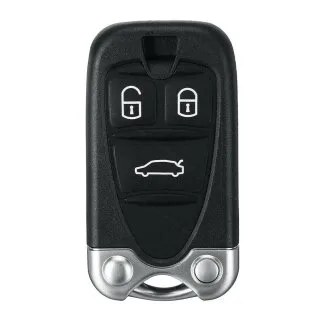 |
Afstandsbediening voor Alfa Romeo en Fiat 3 knoppen · 433 MHz (ALFR102) was: Alfa Romeo 159 Brera Spider afstandsbediening 3 knoppen · 433 MHz (ALFR102) afstandsbedieningen |
Titel +3 modellen |
Alfa Romeo 159 2005–2011, Alfa Romeo Brera 2005–2011, Alfa Romeo Spider 2005–2011 | model-correctie |
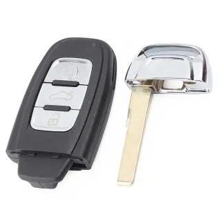 |
Audi TT afstandsbediening 3 knoppen · 868 MHz · HU66 (AUR119) was: Audi Tt afstandsbediening 3 knoppen · 868 MHz · HU66 (AUR119) afstandsbedieningen |
Titel +1 modellen |
Audi TT | model-correctie |
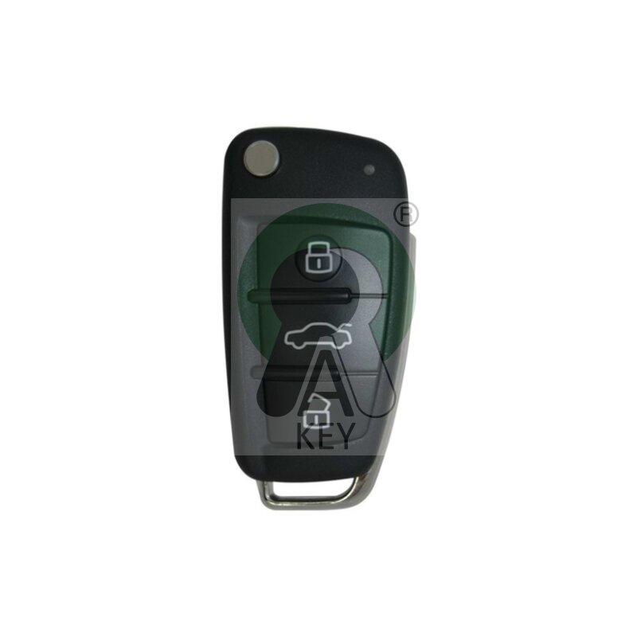 |
Audi sleutelbehuizing 3 knoppen (AURC103) behuizingen |
— | — | autosleutels.info AUD109 |
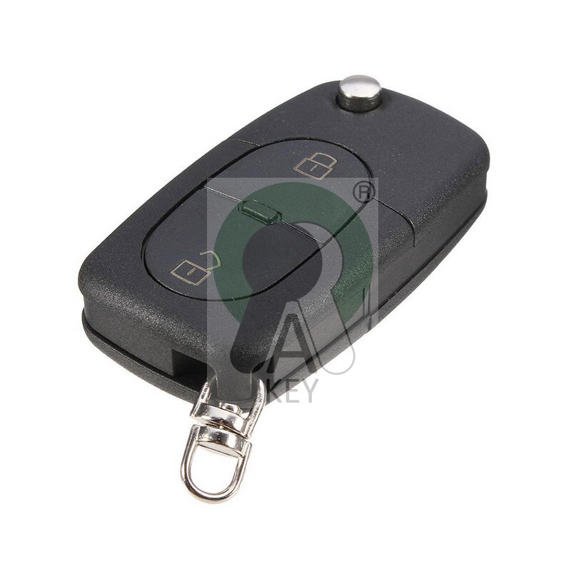 |
Audi sleutelbehuizing 3 knoppen · HU66 (AURC153) behuizingen |
+8 modellen | Audi A3 2000–, Audi A4 1999–, Audi A6 1997–, Audi A8 1998–, Audi TT 1998–, Audi A2 2002–, Audi A6 Allroad 2002–, Audi RS6 2002– | autosleutels.info AUD101B |
| Audi smart key 3 knoppen · 434 MHz (AUR115IEA) smart-keys |
— | — | autosleutels.info AUD137-434 | |
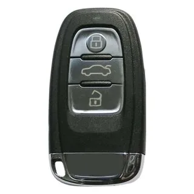 |
Audi smart key 3 knoppen · 868 MHz (AUR116IEA) smart-keys |
+10 modellen | Audi S4 2008–2016, Audi S5 2007–2016, Audi A6 2012–2015, Audi S6 2012–2015, Audi A7 2011–2016, Audi S7 2011–2016, Audi A8 2009–2016, Audi S8 2009–2016, Audi A6 Allroad 2013–2015, Audi Q5 2008–2016 | autosleutels.info AUD137KL-868 |
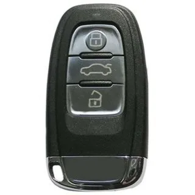 |
Audi smart key 3 knoppen · 868 MHz · HU66 (AUR114X) smart-keys |
+7 modellen | Audi S4 2008–2016, Audi S5 2007–2016, Audi S6 2012–2015, Audi S7 2011–2016, Audi A8 2009–2016, Audi S8 2009–2016, Audi A6 Allroad 2013–2015 | autosleutels.info AUD137KL-868 |
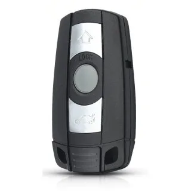 |
BMW afstandsbediening 3 knoppen · 315 MHz · HU92R (BMR106) afstandsbedieningen |
+3 modellen | BMW 1-serie, BMW 3-serie, BMW 5-serie | autosleutels.info BMW109A |
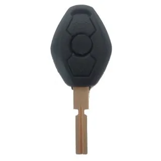 |
BMW afstandsbediening 3 knoppen · 433 MHz · HU58 (BMR112) afstandsbedieningen |
+6 modellen | BMW 3-serie 1995–2002, BMW 5-serie 1995–2003, BMW 7-serie 1994–2001, BMW X5 1999–2002, BMW Z3 1996–2002, BMW Z8 1996–2002 | AccessFobs Diamond Remote Key Case with HU58 Blade compatible with BMW 3 5 7 Series |
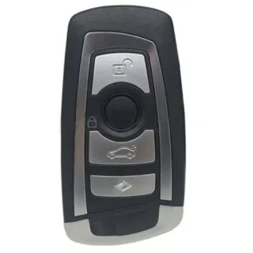 |
BMW smart key 4 knoppen · 868 MHz · HU92R (BMR109IEA) smart-keys |
+24 modellen | BMW 1-serie F20 2011–2018, BMW F21 2011–2018, BMW 2-serie F22 2014–2018, BMW F23 2014–2018, BMW F46 2014–2018, BMW 3-serie F30 2012–2018, BMW F31 2012–2018, BMW F34 2012–2018, BMW 4-serie F32 2013–2020, BMW F33 2013–2020, BMW F36 2013–2020, BMW 5-serie F10 2009–2018, BMW F11 2009–2018, BMW 6-serie F06 2011–2018, BMW F12 2011–2018, BMW F13 2011–2018, BMW 7-serie F01 2008–2016, BMW F02 2008–2016, BMW X1 F48 2015–2022, BMW X2 F39 2017–2022, BMW X3 F25 2010–2018, BMW X4 F26 2014–2018, BMW X5 F15 2013–2018, BMW X6 F16 2014–2018 | AccessFobs SMART Key Remote Fob compatible with BMW CAS 4 & FEM F-Series and 7 Series 868mhz |
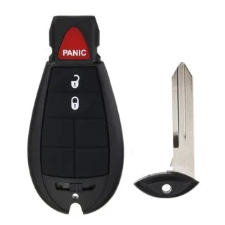 |
Chrysler afstandsbediening 2 knoppen · 433 MHz · CY16 (CHYR104) afstandsbedieningen |
+2 modellen | Chrysler Town and Country 2008–2010, Jeep Grand Cherokee 2008–2013 | AccessFobs Ignition Remote for Chrysler Jeep Dodge ID46 |
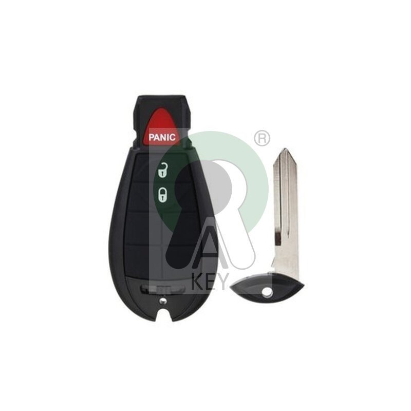 |
Chrysler sleutelbehuizing 2 knoppen · CY16 (CHYRC159) behuizingen |
+2 modellen | Chrysler Town and Country 2008–2010, Jeep Grand Cherokee 2008–2013 | AccessFobs Ignition Remote for Chrysler Jeep Dodge ID46 |
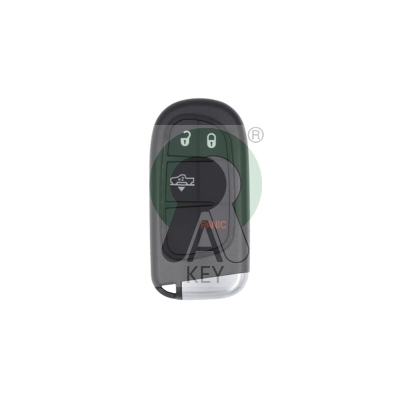 |
Chrysler sleutelbehuizing 4 knoppen · CY16 (CHYRC166) behuizingen |
+6 modellen | Chrysler 300 2011–2018, Fiat 500X 2014–2016, Fiat Freemont 2011–2015, Jeep Cherokee 2014–2019, Jeep Grand Cherokee 2014–2019, Jeep Renegade 2015–2017 | AccessFobs Proximity Remote Fob for Chrysler Dodge Fiat Jeep ID46 |
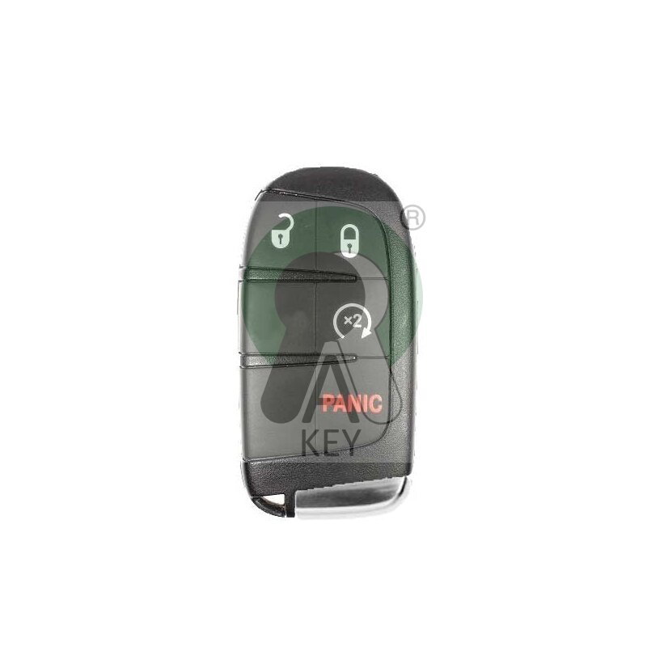 |
Chrysler sleutelbehuizing 4 knoppen · CY16 (CHYRC168) behuizingen |
+6 modellen | Chrysler 300 2011–2018, Fiat 500X 2014–2016, Fiat Freemont 2011–2015, Jeep Cherokee 2014–2019, Jeep Grand Cherokee 2014–2019, Jeep Renegade 2015–2017 | AccessFobs Proximity Remote Fob for Chrysler Dodge Fiat Jeep ID46 |
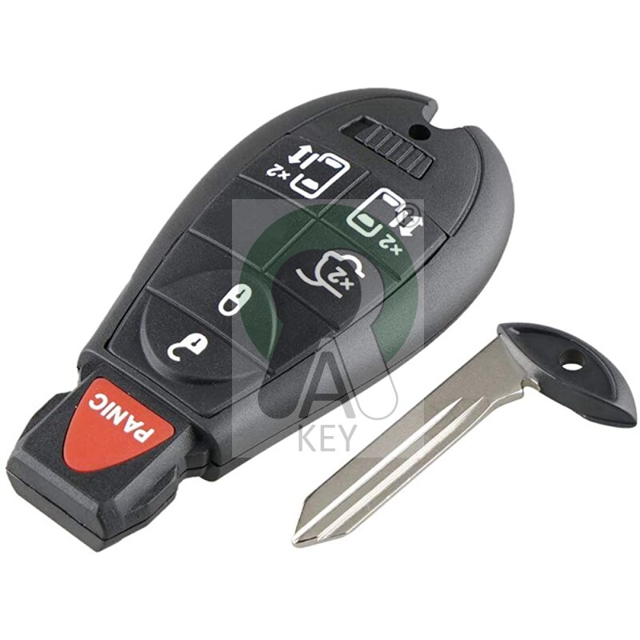 |
Chrysler sleutelbehuizing 5 knoppen · CY16 (CHYRC160) behuizingen |
+5 modellen | Jeep Grand Cherokee 2008–2013, Jeep Commander 2009–2013, Chrysler Grand Voyager 2008–2013, Chrysler Town and Country 2008–2013, Chrysler 300 2008–2012 | AccessFobs Smart Key Remote for Chrysler Dodge Jeep - 5 button Fobik Remote PCF7941 |
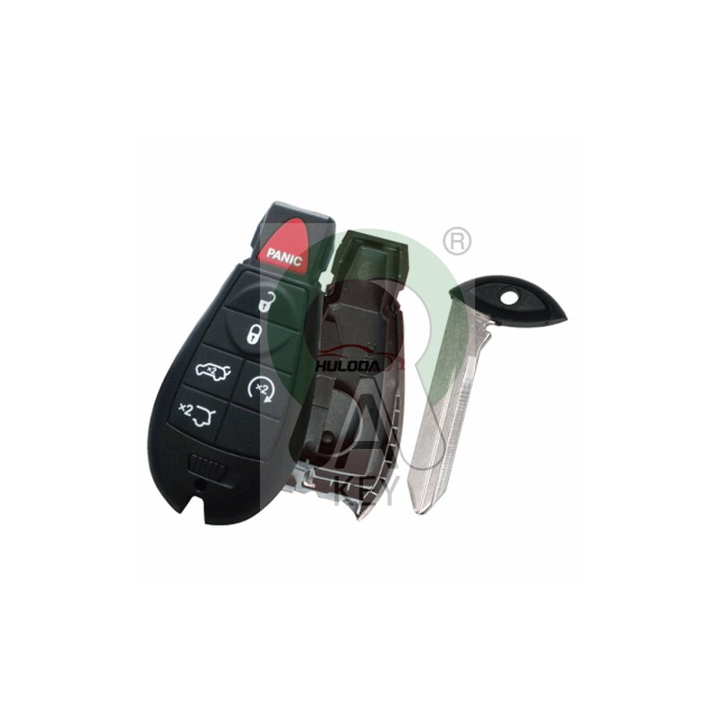 |
Chrysler sleutelbehuizing 5 knoppen · CY16 (CHYRC163) behuizingen |
+5 modellen | Jeep Grand Cherokee 2008–2013, Jeep Commander 2009–2013, Chrysler Grand Voyager 2008–2013, Chrysler Town and Country 2008–2013, Chrysler 300 2008–2012 | AccessFobs Smart Key Remote for Chrysler Dodge Jeep - 5 button Fobik Remote PCF7941 |
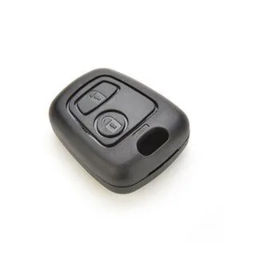 |
Citroën afstandsbediening 2 knoppen · 434 MHz (CTR151) afstandsbedieningen |
— | — | autosleutels.info CIT131D |
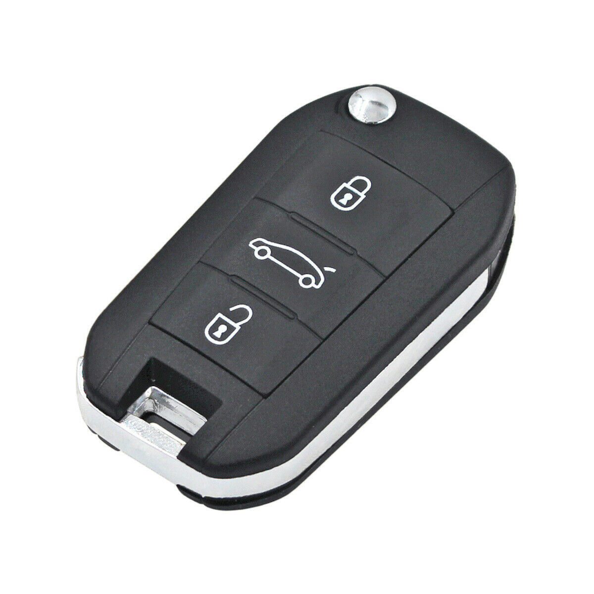 |
Citroën afstandsbediening 3 knoppen · 433 MHz · VA2 (CTR107) was: Citroën Ds4 & Ds5 afstandsbediening 3 knoppen · 433 MHz · VA2 (CTR107) afstandsbedieningen |
Titel +2 modellen |
Citroën DS4, Citroën DS5 | model-correctie |
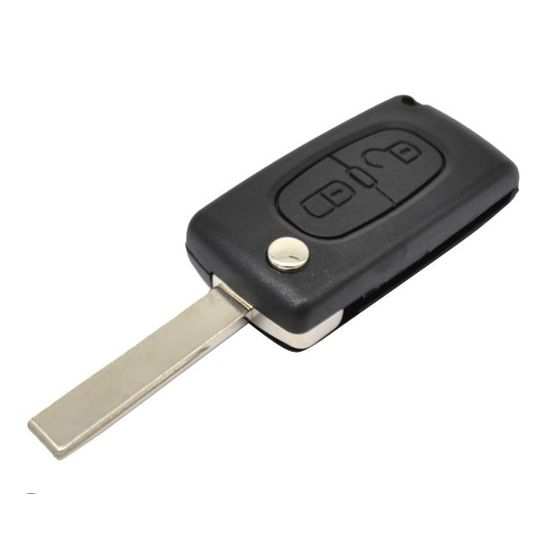 |
Citroën sleutelbehuizing 2 knoppen · HU83 · met batterijvak (CTRC103) behuizingen |
+8 modellen | Citroën Berlingo 2009–2018, Citroën C3 2009–2016, Citroën DS3 2009–2017, Peugeot 207 2010–2016, Peugeot 307 2010–2016, Peugeot 308 2010–2016, Peugeot 3008 2012–2016, Peugeot 5008 2009–2015 | AccessFobs Flip Key Remote Case for Peugeot Citroen with HU83 blade (2 button) Battery on Board |
| Citroën sleutelbehuizing 2 knoppen · HU83 · zonder batterijvak (CTRC102) behuizingen |
+8 modellen | Citroën Berlingo 2009–2018, Citroën C3 2009–2016, Citroën DS3 2009–2017, Peugeot 207 2010–2016, Peugeot 307 2010–2016, Peugeot 308 2010–2016, Peugeot 3008 2012–2016, Peugeot 5008 2009–2015 | AccessFobs Flip Key Remote Case for Peugeot Citroen with HU83 blade (2 button) Battery on Board | |
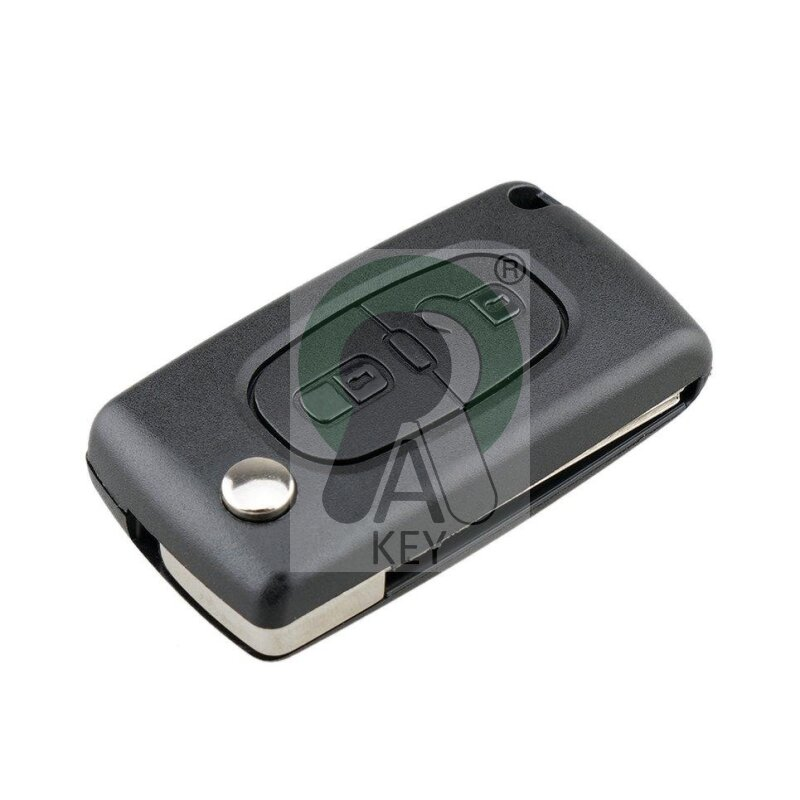 |
Citroën sleutelbehuizing 2 knoppen · NE73 · met batterijvak (CTRC111) behuizingen |
+3 modellen | Citroën C4 Grand Picasso 2010–2013, Citroën C4 Picasso 2010–2013, Citroën C8 2009–2014 | autosleutels.info CIT133D-HU83 |
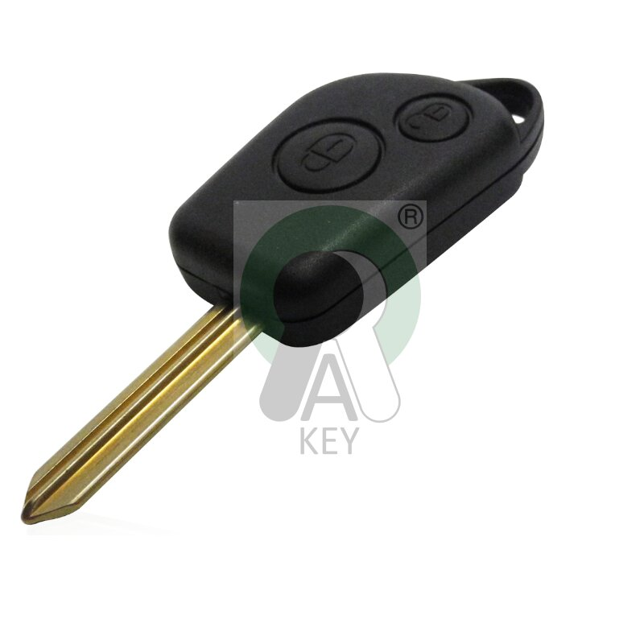 |
Citroën sleutelbehuizing 2 knoppen · SX9 · zonder batterijvak (CTRC105) behuizingen |
+3 modellen | Citroën C4 Grand Picasso 2010–2013, Citroën C4 Picasso 2010–2013, Citroën C8 2009–2014 | autosleutels.info CIT133D-HU83 |
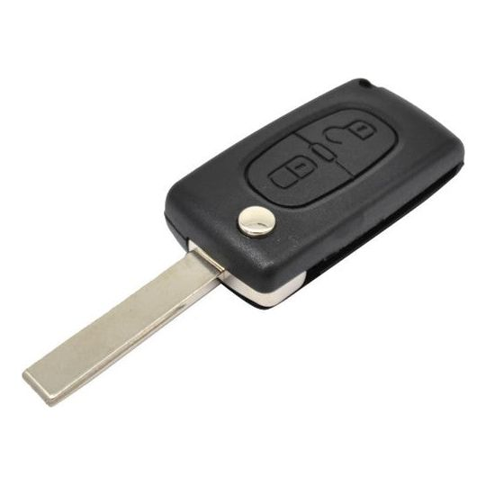 |
Citroën sleutelbehuizing 2 knoppen · VA2 · met batterijvak (CTRC104) behuizingen |
+3 modellen | Citroën C3 2009–2016, Citroën DS3 2010–2016, Citroën Berlingo 2009–2017 | autosleutels.info CIT133D-VA2 |
| Citroën sleutelbehuizing 2 knoppen · VA2 · zonder batterijvak (CTRC117) behuizingen |
+3 modellen | Citroën C3 2009–2016, Citroën DS3 2010–2016, Citroën Berlingo 2009–2017 | autosleutels.info CIT133D-VA2 | |
| Citroën sleutelbehuizing 2 knoppen · zonder batterijvak (CTRC114) behuizingen |
+8 modellen | Citroën Berlingo 2009–2018, Citroën C3 2009–2016, Citroën DS3 2009–2017, Peugeot 207 2010–2016, Peugeot 307 2010–2016, Peugeot 308 2010–2016, Peugeot 3008 2012–2016, Peugeot 5008 2009–2015 | AccessFobs Flip Key Remote Case for Peugeot Citroen with HU83 blade (2 button) Battery on Board | |
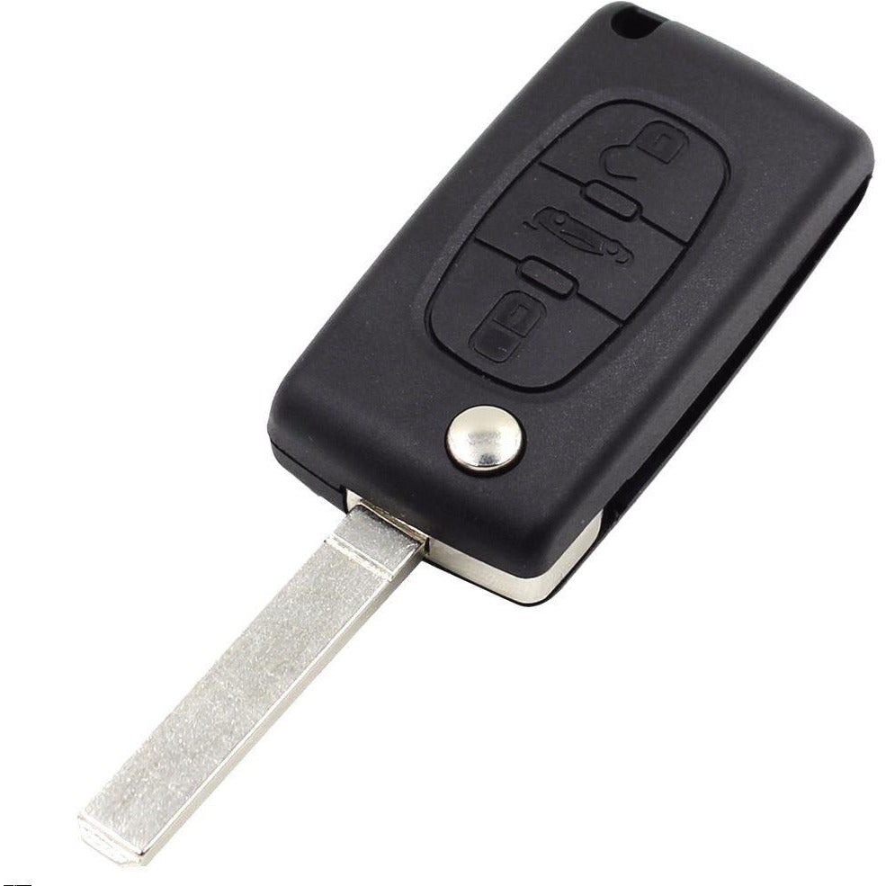 |
Citroën sleutelbehuizing 3 knoppen · HU83 · met batterijvak (CTRC118) behuizingen |
+5 modellen | Citroën C2, Citroën C3, Citroën C4, Citroën C5, Citroën C6 | autosleutels.info CIT134DK |
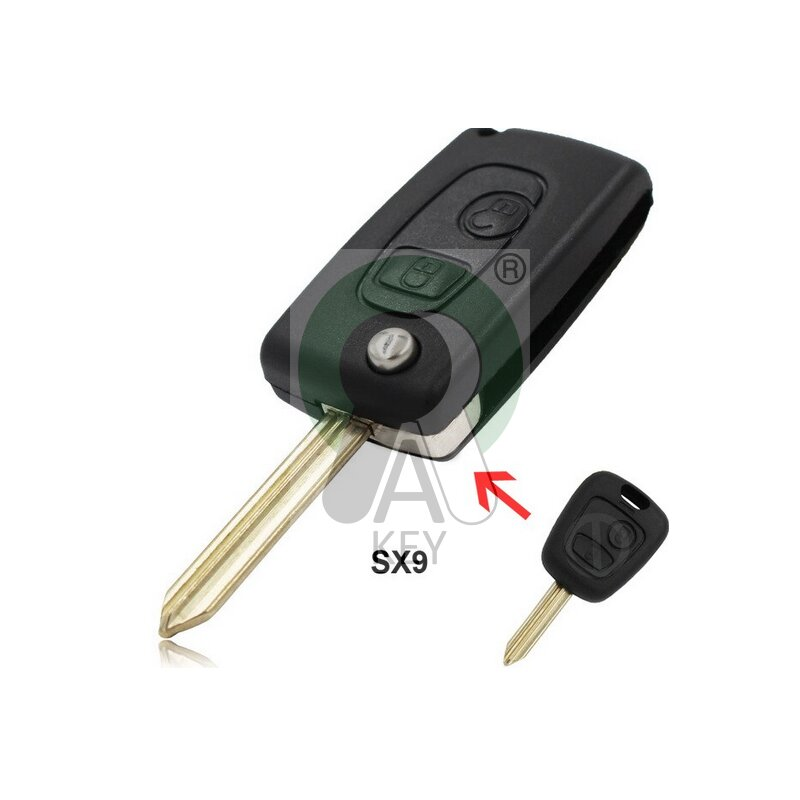 |
Sleutelbehuizing voor Citroën en Peugeot 2 knoppen · SX9 · zonder batterijvak (CTRC106) behuizingen |
+3 modellen | Citroën C4 Grand Picasso 2010–2013, Citroën C4 Picasso 2010–2013, Citroën C8 2009–2014 | autosleutels.info CIT133D-HU83 |
| Sleutelbehuizing voor Citroën en Peugeot 2 knoppen · VA2 · zonder batterijvak (CTRC112) behuizingen |
+8 modellen | Citroën Berlingo 2009–2018, Citroën C3 2009–2016, Citroën DS3 2009–2017, Peugeot 207 2010–2016, Peugeot 307 2010–2016, Peugeot 308 2010–2016, Peugeot 3008 2012–2016, Peugeot 5008 2009–2015 | AccessFobs Flip Key Remote Case for Peugeot Citroen with HU83 blade (2 button) Battery on Board | |
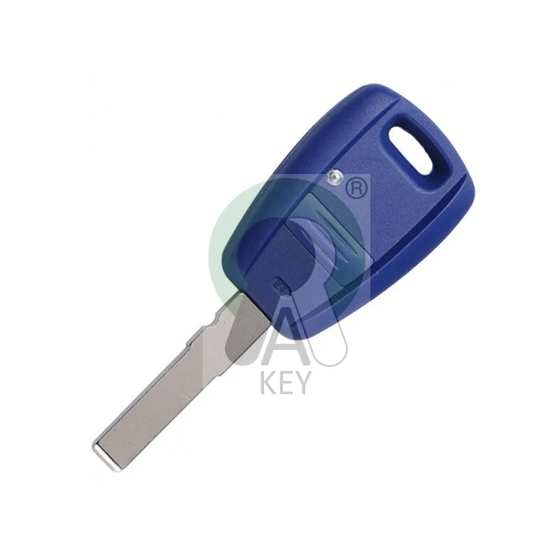 →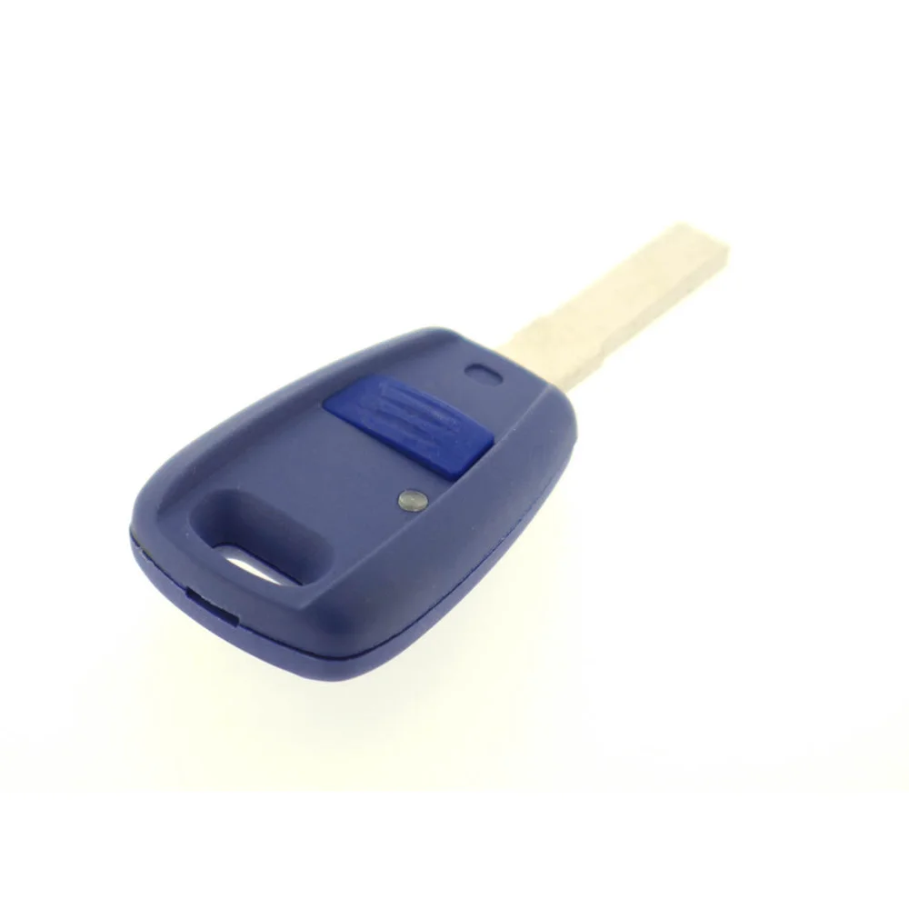 |
Fiat afstandsbediening 1 knoppen · 433 MHz · SIP22 (FIR114IEA) afstandsbedieningen |
Nieuwe foto +2 modellen |
Fiat Doblo –2008, Fiat Punto 2004–2006 | autosleutels.info FIA136 |
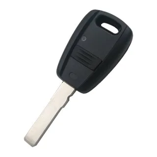 |
Fiat afstandsbediening 1 knoppen · 433 MHz · SIP22 (FIR115IEA) afstandsbedieningen |
+2 modellen | Fiat Doblo –2008, Fiat Punto 2004–2006 | autosleutels.info FIA136 |
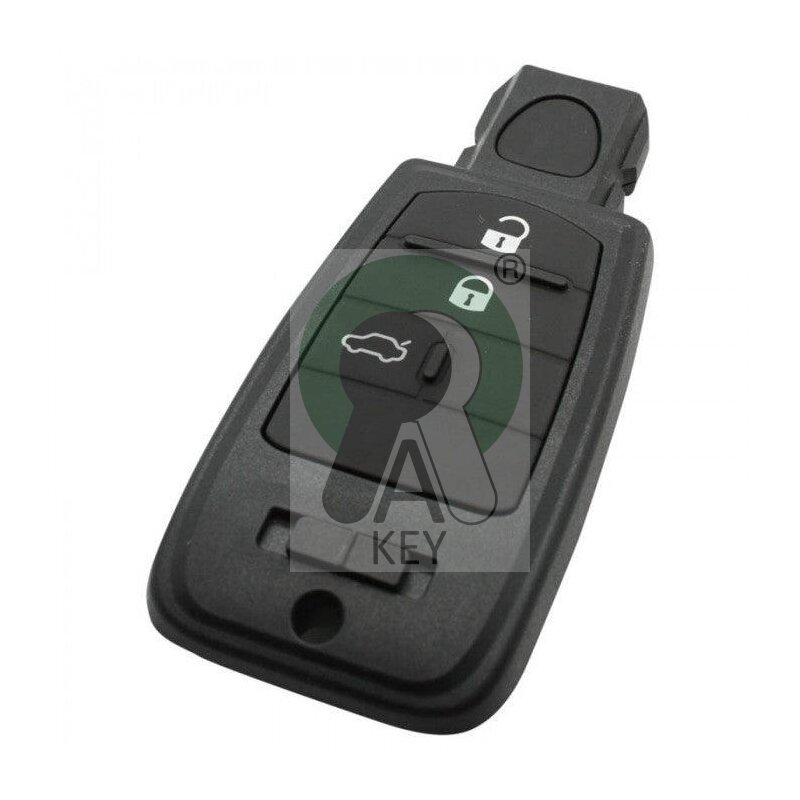 →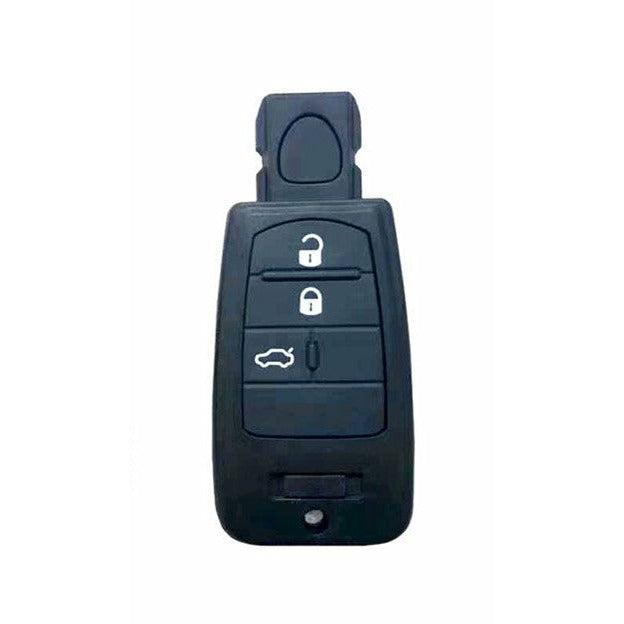 |
Fiat afstandsbediening 3 knoppen · 433 MHz (FIR106IEA) afstandsbedieningen |
Nieuwe foto +1 modellen |
Fiat Croma 2013– | AccessFobs OEM Smart Remote for Fiat Croma PCF7961M |
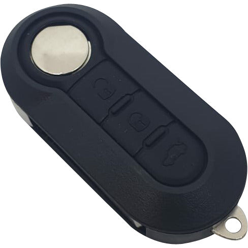 |
Fiat afstandsbediening 3 knoppen · 433 MHz · SIP22 (FIR116IEA) afstandsbedieningen |
+13 modellen | Alfa Romeo MiTo 2008–2020, Citroën Nemo 2011–2020, Fiat 500 2007–2020, Fiat Doblo 2009–2020, Fiat Fiorino 2007–2020, Fiat Grande Punto 2005–2012, Fiat Panda 2011–2020, Fiat Punto 2012–2020, Fiat Punto Evo 2009–2012, Fiat Qubo 2008–2020, Ford Ka 2009–2016, Peugeot Bipper 2012–2020, Opel Combo 2012–2017 | AccessFobs Remote Key Fob for Fiat Ford Peugeot Citroen Alfa ID46 (Delphi) |
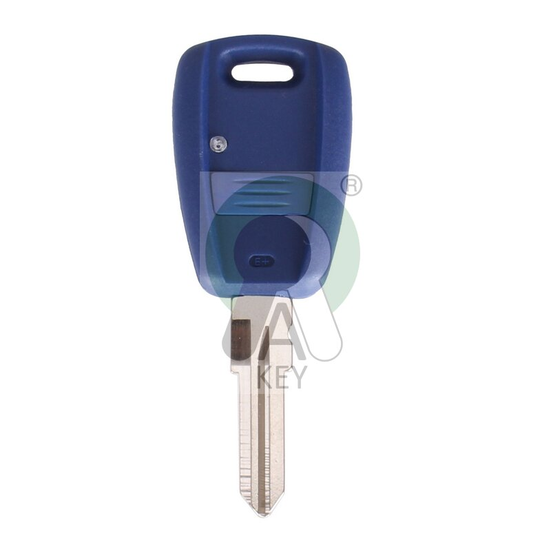 →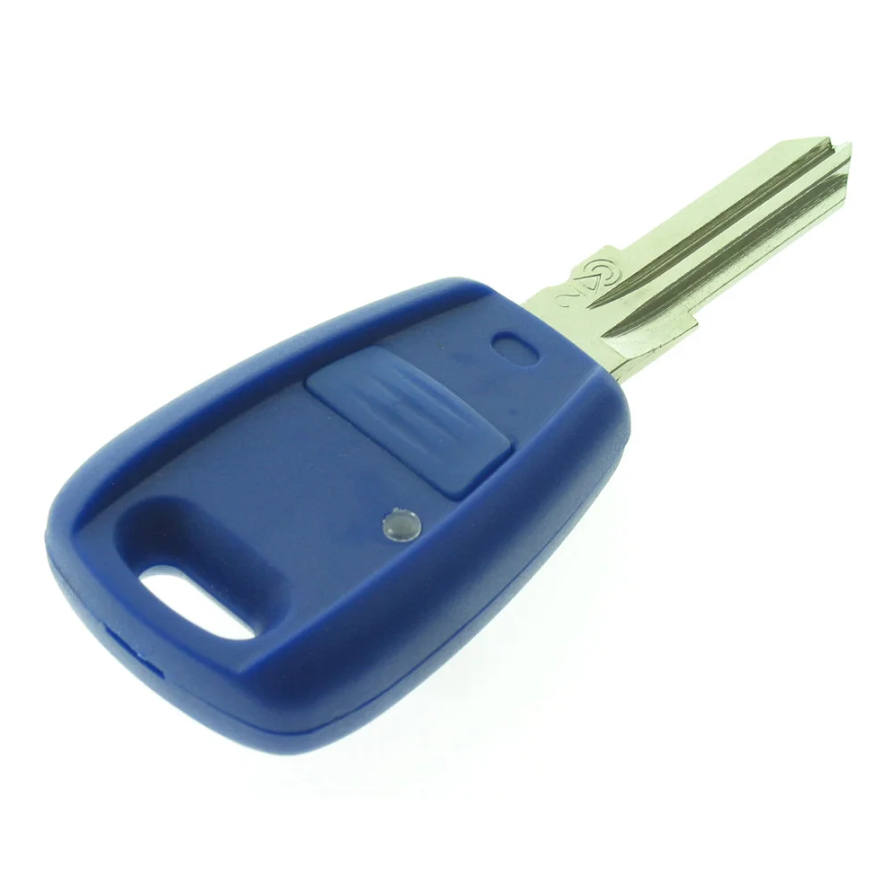 |
Fiat sleutelbehuizing 1 knoppen · GT15R (FIRC101) behuizingen |
Nieuwe foto +1 modellen |
Fiat Punto 1999–2004 | autosleutels.info FIA135 |
| → | Fiat sleutelbehuizing 1 knoppen · SIP22 (FIRC102) behuizingen |
Nieuwe foto +2 modellen |
Fiat Doblo –2008, Fiat Punto 2004–2006 | autosleutels.info FIA136 |
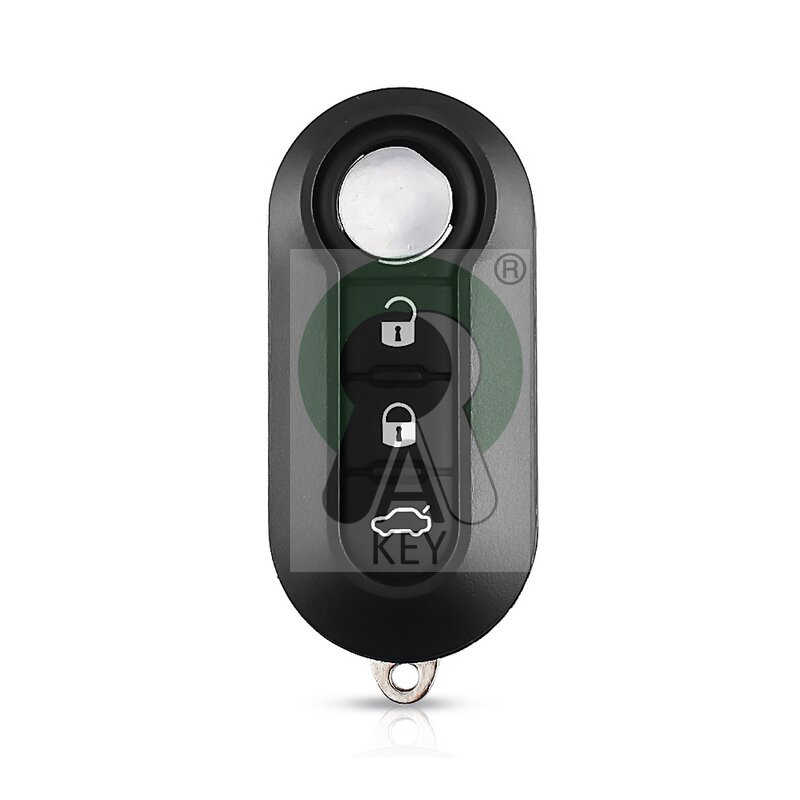 →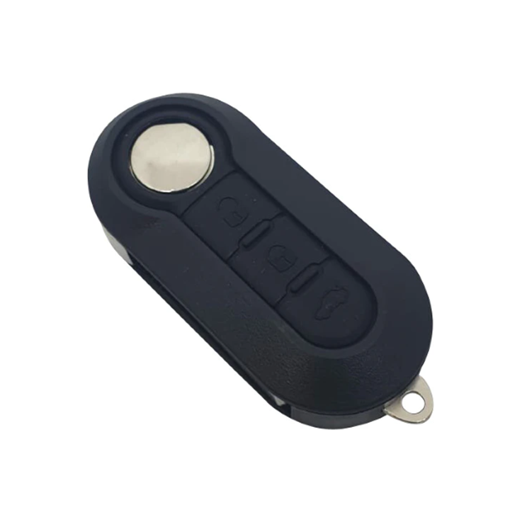 |
Fiat sleutelbehuizing 3 knoppen (FIRC103) behuizingen |
Nieuwe foto +18 modellen |
Citroën Jumper 2008–2021, Citroën Nemo 2011–2021, Citroën Relay 2009–2023, Fiat 500 2007–2020, Fiat 500L 2012–2020, Fiat Bravo 2007–2015, Fiat Doblo 2009–2020, Fiat Ducato 2009–2023, Fiat Fiorino 2007–2020, Fiat Grande Punto 2005–2012, Fiat Panda 2011–2020, Fiat Punto 2002–2020, Fiat Punto Evo 2009–2012, Fiat Qubo 2008–2020, Ford Ka 2009–2017, Peugeot Bipper 2012–2020, Peugeot Boxer 2009–2020, Opel Combo 2012–2023 | AccessFobs Flip Key Remote Case for Fiat Ducato Boxer Relay |
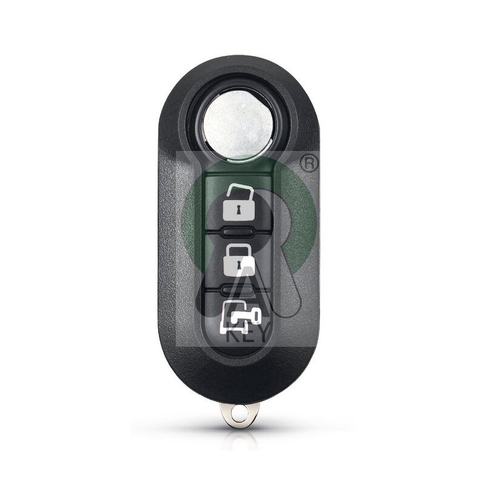 → |
Fiat sleutelbehuizing 3 knoppen (FIRC104) behuizingen |
Nieuwe foto +18 modellen |
Citroën Jumper 2008–2021, Citroën Nemo 2011–2021, Citroën Relay 2009–2023, Fiat 500 2007–2020, Fiat 500L 2012–2020, Fiat Bravo 2007–2015, Fiat Doblo 2009–2020, Fiat Ducato 2009–2023, Fiat Fiorino 2007–2020, Fiat Grande Punto 2005–2012, Fiat Panda 2011–2020, Fiat Punto 2002–2020, Fiat Punto Evo 2009–2012, Fiat Qubo 2008–2020, Ford Ka 2009–2017, Peugeot Bipper 2012–2020, Peugeot Boxer 2009–2020, Opel Combo 2012–2023 | AccessFobs Flip Key Remote Case for Fiat Ducato Boxer Relay |
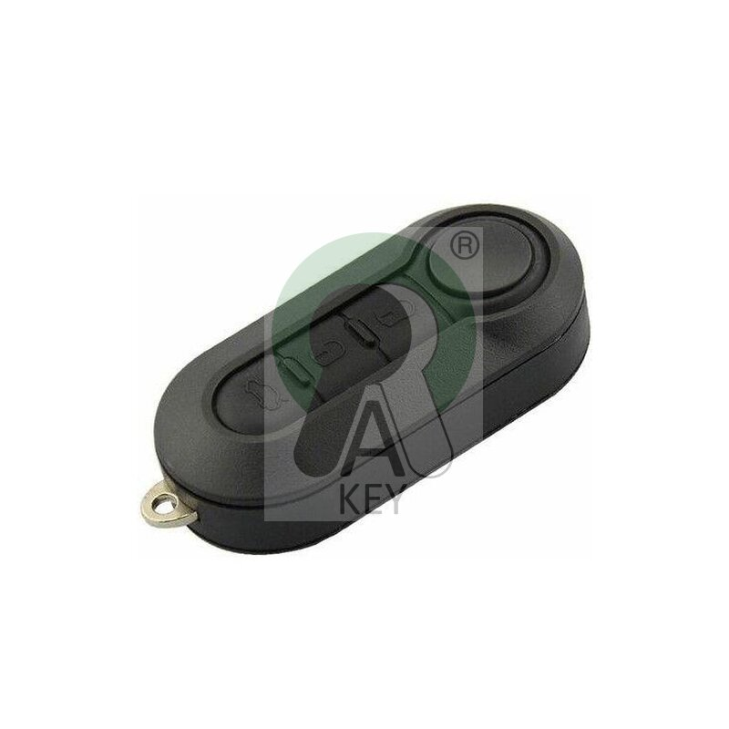 → |
Fiat sleutelbehuizing 3 knoppen (FIRC108) behuizingen |
Nieuwe foto +18 modellen |
Citroën Jumper 2008–2021, Citroën Nemo 2011–2021, Citroën Relay 2009–2023, Fiat 500 2007–2020, Fiat 500L 2012–2020, Fiat Bravo 2007–2015, Fiat Doblo 2009–2020, Fiat Ducato 2009–2023, Fiat Fiorino 2007–2020, Fiat Grande Punto 2005–2012, Fiat Panda 2011–2020, Fiat Punto 2002–2020, Fiat Punto Evo 2009–2012, Fiat Qubo 2008–2020, Ford Ka 2009–2017, Peugeot Bipper 2012–2020, Peugeot Boxer 2009–2020, Opel Combo 2012–2023 | AccessFobs Flip Key Remote Case for Fiat Ducato Boxer Relay |
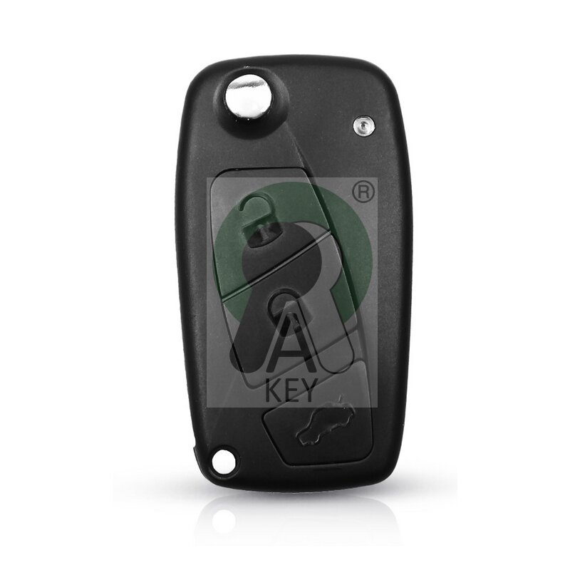 →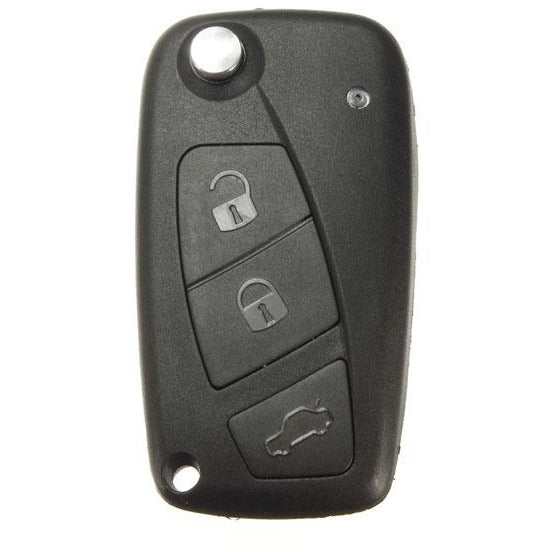 |
Fiat sleutelbehuizing 3 knoppen · SIP22 (FIRC107) behuizingen |
Nieuwe foto +10 modellen |
Citroën Nemo 2011–2020, Fiat 500 2007–2021, Fiat Doblo 2009–2020, Fiat Fiorino 2007–2020, Fiat Grande Punto 2005–2012, Fiat Punto 2012–2020, Fiat Punto Evo 2009–2012, Fiat Qubo 2008–2020, Ford Ka 2009–2016, Peugeot Bipper 2012–2020 | AccessFobs Flip Key Remote Case for Fiat 500 Punto |
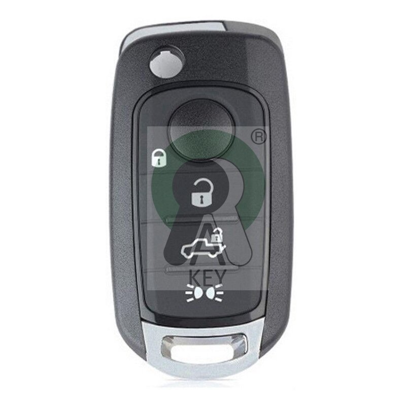 |
Fiat sleutelbehuizing 4 knoppen (FIRC129) behuizingen |
+3 modellen | Fiat 500X 2016–2018, Fiat Egea 2016–2018, Fiat Tipo 2016–2018 | autosleutels.info FIA139B |
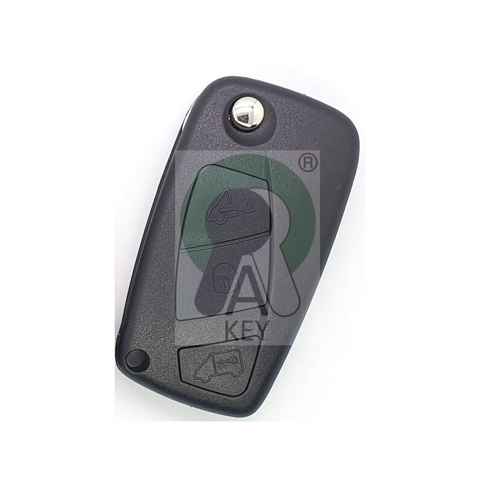 |
Sleutelbehuizing voor Fiat en Citroën 3 knoppen · SIP22 (FIRC117) behuizingen |
— | — | autosleutels.info CIT113-HU83 |
 |
Ford afstandsbediening 3 knoppen (FOR105) afstandsbedieningen |
+2 modellen | Ford Mondeo Vignale 2016–, Ford Mustang 2016– | autosleutels.info FRD124B |
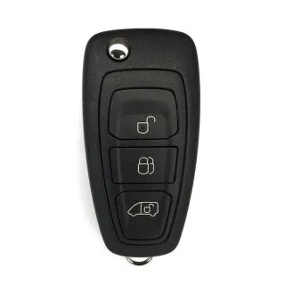 |
Ford afstandsbediening 3 knoppen · 433 MHz (FOR114) afstandsbedieningen |
+2 modellen | Ford Transit, Ford Tourneo Custom | autosleutels.info FRD142C |
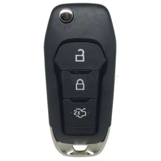 |
Ford afstandsbediening 3 knoppen · 433 MHz (FOR115) afstandsbedieningen |
+2 modellen | Ford Transit, Ford Tourneo Custom | autosleutels.info FRD142C |
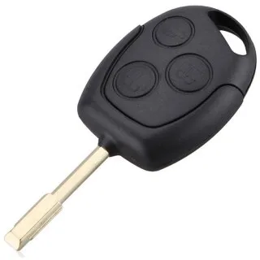 |
Ford afstandsbediening 3 knoppen · 433 MHz · FO21 (FOR101) afstandsbedieningen |
+1 modellen | Ford Transit 2006–2014 | AccessFobs Remote Key Case With Blade for Ford Transit Mk7 2006> |
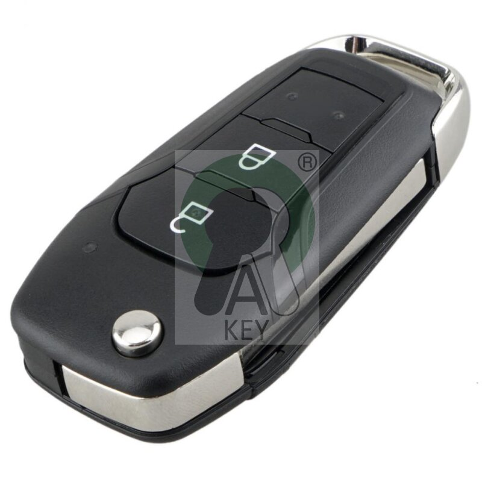 →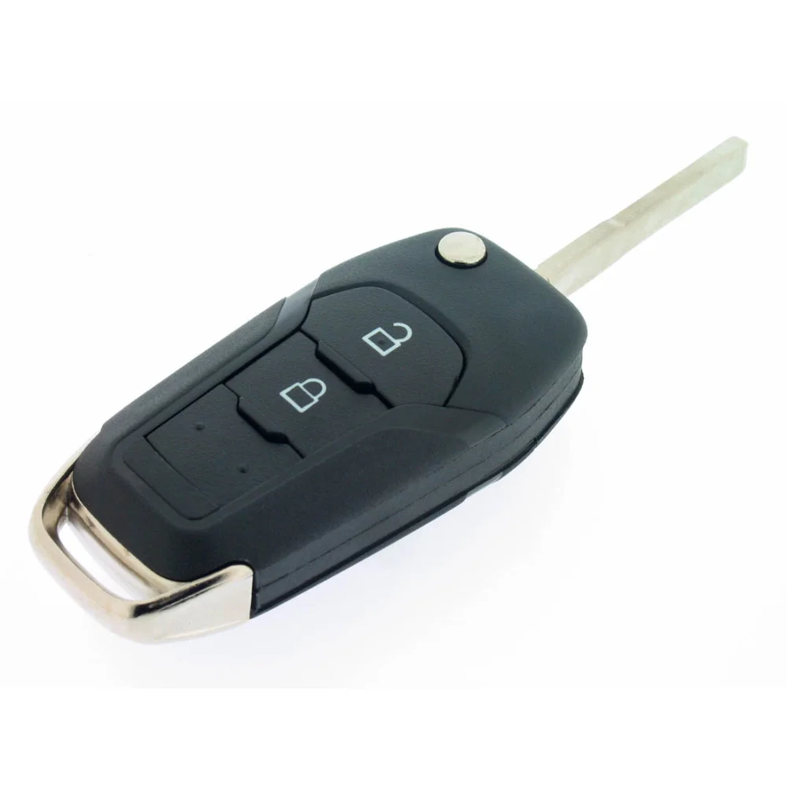 |
Ford sleutelbehuizing 2 knoppen · HU101 (FORC110) behuizingen |
Nieuwe foto +2 modellen |
Ford Ranger 2015–, Ford Fiesta 2017– | autosleutels.info FRD124A |
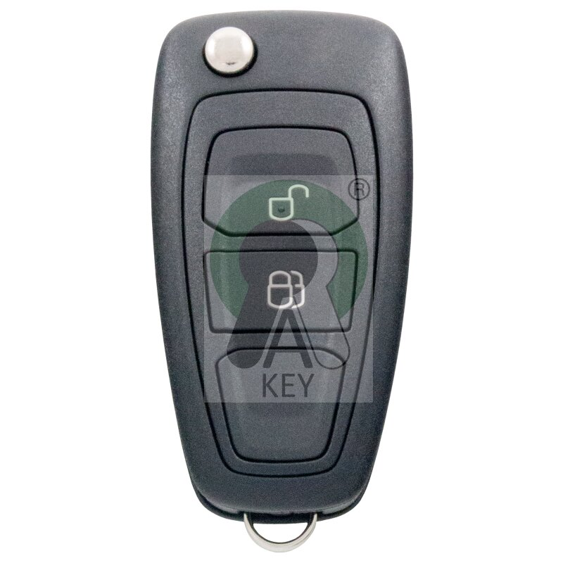 → |
Ford sleutelbehuizing 2 knoppen · HU101 (FORC114) behuizingen |
Nieuwe foto +2 modellen |
Ford Ranger 2015–, Ford Fiesta 2017– | autosleutels.info FRD124A |
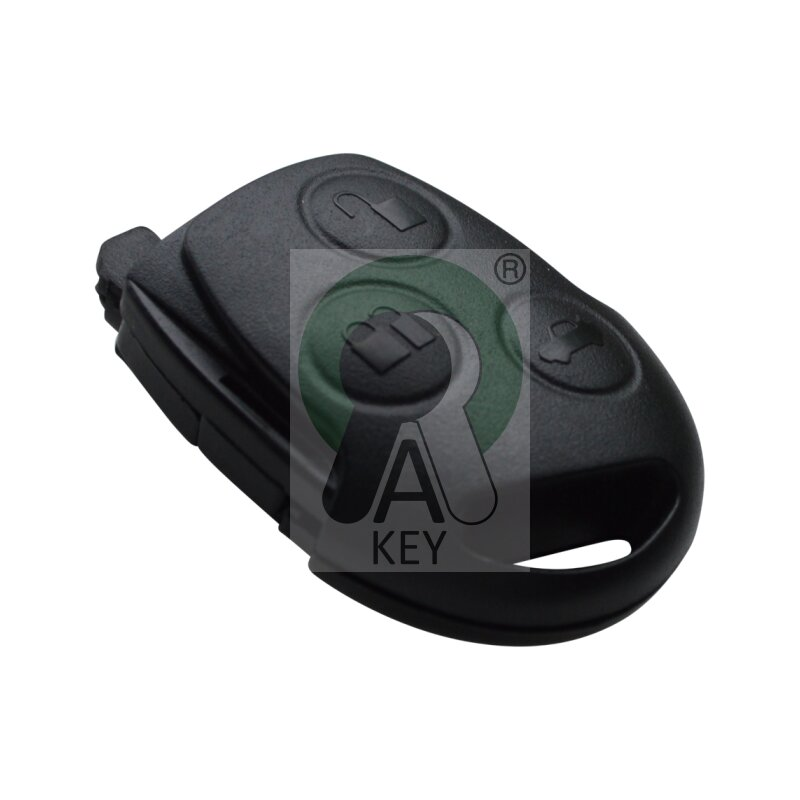 |
Ford sleutelbehuizing 3 knoppen (FORC101) behuizingen |
— | — | autosleutels.info FRD108D |
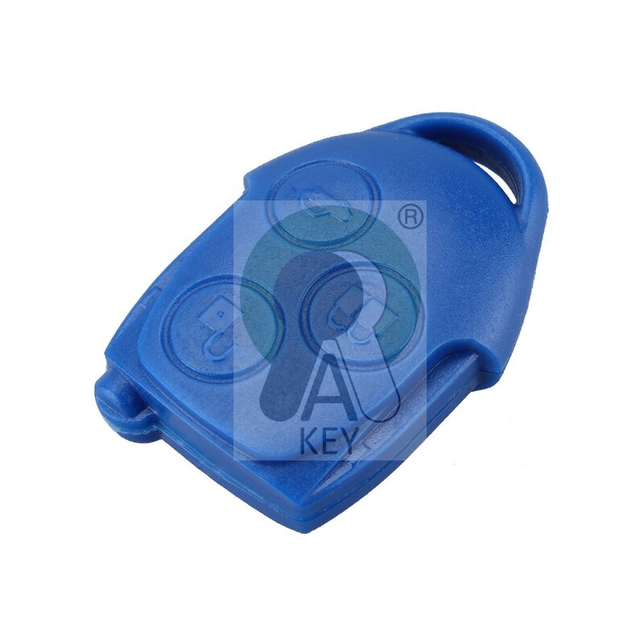 |
Ford sleutelbehuizing 3 knoppen (FORC102) behuizingen |
— | — | autosleutels.info FRD108D |
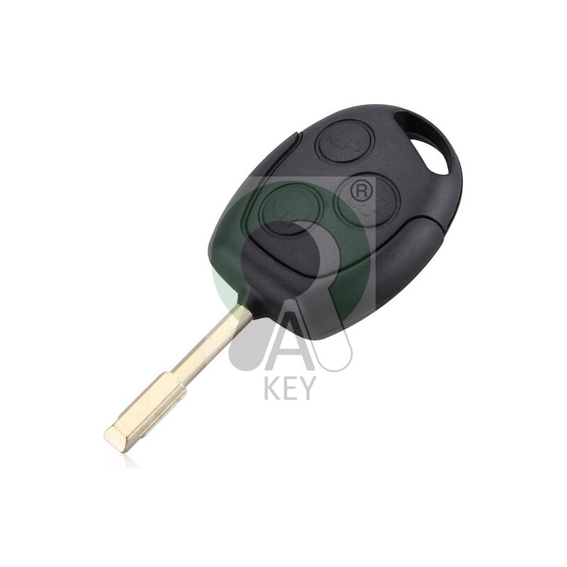 →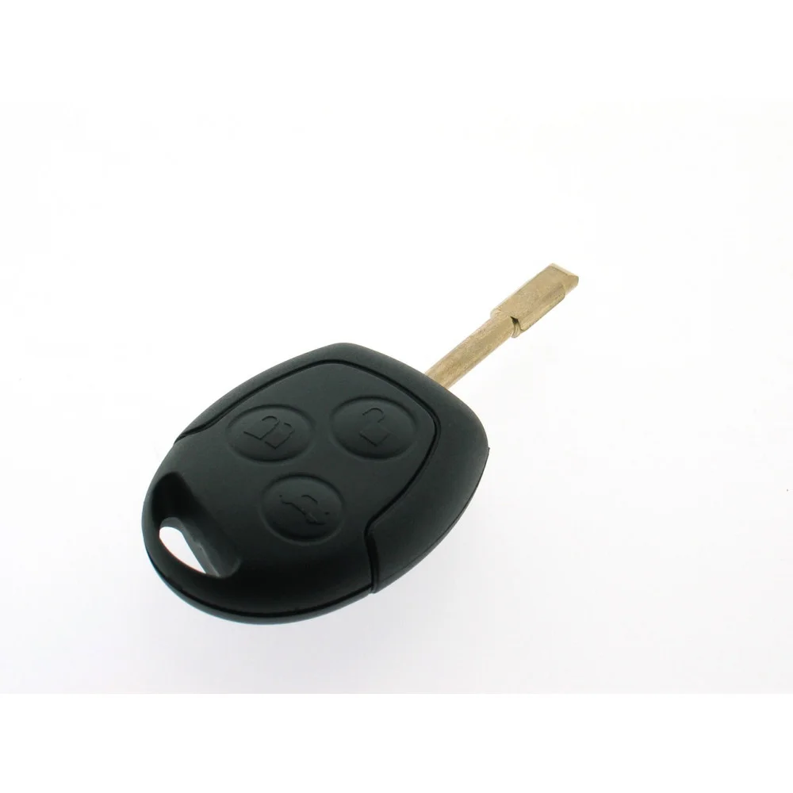 |
Ford sleutelbehuizing 3 knoppen · FO21 (FORC152) behuizingen |
Nieuwe foto +5 modellen |
Ford Transit, Ford Escort, Ford Focus, Ford Fiesta, Ford Mondeo | autosleutels.info FRD103G |
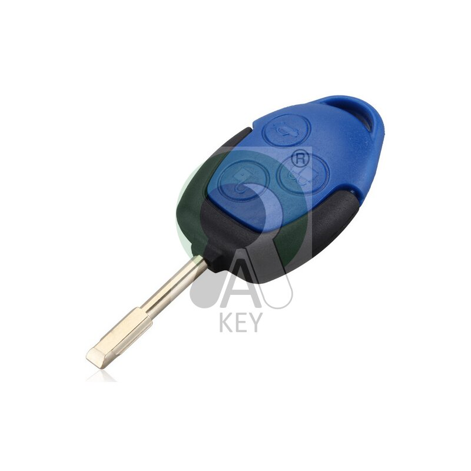 → |
Ford sleutelbehuizing 3 knoppen · FO21 (FORC153) behuizingen |
Nieuwe foto — |
— | autosleutels.info FRD108D |
| → | Ford sleutelbehuizing 3 knoppen · HU101 (FORC103) behuizingen |
Nieuwe foto +5 modellen |
Ford Galaxy 2015–2019, Ford Mondeo 2014–2018, Ford S-Max 2015–2017, Ford Mustang 2014–2018, Ford Edge 2016–2018 | AccessFobs Smart Key Remote Case for Ford HU101 (battery on case) |
| Ford sleutelbehuizing 3 knoppen · HU101 (FORC106) behuizingen |
+1 modellen | Ford Transit 2012– | autosleutels.info FRD129C | |
| Ford sleutelbehuizing 3 knoppen · HU101 (FORC109) behuizingen |
+2 modellen | Ford Mondeo Vignale 2016–, Ford Mustang 2016– | autosleutels.info FRD124B | |
| Ford sleutelbehuizing 3 knoppen · HU101 (FORC112) behuizingen |
+5 modellen | Ford Galaxy 2015–2019, Ford Mondeo 2014–2018, Ford S-Max 2015–2017, Ford Mustang 2014–2018, Ford Edge 2016–2018 | AccessFobs Smart Key Remote Case for Ford HU101 (battery on case) | |
| Ford smart key 3 knoppen (FOR120 Or) smart-keys |
+4 modellen | Ford C-Max 2015–2019, Ford Focus 2015–2018, Ford Grand C-Max 2015–2019, Ford Kuga 2016–2020 | AccessFobs Keyless 3 button Remote Key for Ford PCF7953P HITAG Pro ID47 CHIP | |
| Ford smart key 5 knoppen · 902 MHz · HU101 (FOR118) was: Ford Edge Fusio smart key 5 knoppen · 902 MHz · HU101 (FOR118) smart-keys |
Titel +2 modellen |
Ford Edge, Ford Fusion | model-correctie | |
| Honda CR-V afstandsbediening 3 knoppen · 434 MHz · HON66 (HOR102) was: Honda Crv afstandsbediening 3 knoppen · 434 MHz · HON66 (HOR102) afstandsbedieningen |
Titel +1 modellen |
Honda CR-V | model-correctie | |
| → | Honda Civic afstandsbediening 2 knoppen · 434 MHz · HON66 (HOR103) afstandsbedieningen |
Nieuwe foto +2 modellen |
Honda CR-V 2011–2014, Honda Jazz 2012–2015 | autosleutels.info HON141D |
 |
Honda Civic smart key 3 knoppen · 433 MHz · HON66 (HOR106) smart-keys |
+3 modellen | Honda City 2015–, Honda Jazz 2015–, Honda Grace 2016– | autosleutels.info HON144M |
| Honda Civic smart key 3 knoppen · 433 MHz · HON66 (HOR107) smart-keys |
+1 modellen | Honda CR-V 2012–2016 | autosleutels.info HON144C | |
| Honda afstandsbediening 2 knoppen · 434 MHz · HON66 (HOR105) afstandsbedieningen |
+2 modellen | Honda Civic 2012–2015, Honda CR-V 2012–2016 | autosleutels.info HON144B | |
| Honda afstandsbediening 2 knoppen · 434 MHz · HON66 (HOR108) afstandsbedieningen |
+3 modellen | Honda CR-V 2006–2008, Honda FR-V 2007–2009, Honda Jazz 2006–2008 | autosleutels.info HON131D1 | |
| Honda afstandsbediening 3 knoppen · 433 MHz · HON66 (HON112IEA) afstandsbedieningen |
+3 modellen | Honda Civic 2014–, Honda CR-V 2015–, Honda Jazz | autosleutels.info HON141B | |
| Honda afstandsbediening 3 knoppen · 433 MHz · HON66 (HOR110) afstandsbedieningen |
+1 modellen | Honda Civic | autosleutels.info HON144K | |
| → | Honda sleutelbehuizing 2 knoppen (HORC110) behuizingen |
Nieuwe foto — |
— | autosleutels.info HON109A |
| Honda sleutelbehuizing 2 knoppen · HON66 (HORC102) behuizingen |
+4 modellen | Honda Civic 2013–2013, Honda CR-V 2010–2013, Honda Jazz 2010–2015, Honda CR-Z 2010–2015 | autosleutels.info HON121 | |
| → | Honda sleutelbehuizing 2 knoppen · HON66 (HORC104) behuizingen |
Nieuwe foto +3 modellen |
Honda CR-V 2015–2017, Honda Jade 2014–2017, Honda Crosstour 2014–2016 | autosleutels.info HON103A |
| Honda sleutelbehuizing 2 knoppen · HON66 (HORC105) behuizingen |
+3 modellen | Honda CR-V 2007–2009, Honda Insight 2009–2011, Honda Jazz 2009–2011 | autosleutels.info HON131D | |
| → | Honda sleutelbehuizing 2 knoppen · HON66 (HORC113) behuizingen |
Nieuwe foto +4 modellen |
Honda Civic 2015–2017, Honda Accord, Honda Jazz, Honda CR-V | autosleutels.info HON101 |
| → | Honda sleutelbehuizing 3 knoppen (HORC101) behuizingen |
Nieuwe foto +2 modellen |
Honda Accord 2009–2012, Honda CR-V | autosleutels.info HON122 |
| Honda sleutelbehuizing 3 knoppen · HON66 (HORC106) behuizingen |
+2 modellen | Honda Accord 2003–2005, Honda CR-V 2003–2006 | autosleutels.info HON132C3 | |
| → | Honda sleutelbehuizing 3 knoppen · HON66 (HORC112) behuizingen |
Nieuwe foto +4 modellen |
Honda Civic 2015–2017, Honda Accord, Honda Jazz, Honda CR-V | autosleutels.info HON102 |
| Afstandsbediening voor Hyundai en Kia 3 knoppen · 433 MHz (HYR108) afstandsbedieningen |
+1 modellen | Hyundai i20 | autosleutels.info HYU145H | |
| Afstandsbediening voor Hyundai en Kia 3 knoppen · 433 MHz · TOY49 (HYR158) afstandsbedieningen |
— | — | autosleutels.info HYU145Q | |
| Hyundai Creta smart key 3 knoppen · 433 MHz · TOY48 (HYR207X) was: Hyundai Ix25 Creta smart key 3 knoppen · 433 MHz · TOY48 (HYR207X) smart-keys |
Titel +1 modellen |
Hyundai Creta 2015–2018 | model-correctie | |
| → | Hyundai Ioniq afstandsbediening 3 knoppen · 433 MHz (HYR113) afstandsbedieningen |
Nieuwe foto +2 modellen |
Hyundai Ioniq Electric 2019–, Hyundai Ioniq Hybrid 2019– | autosleutels.info HYU148E |
| Hyundai Kona afstandsbediening 3 knoppen · 433 MHz (HYR117) afstandsbedieningen |
— | — | autosleutels.info HYU149F3 | |
| Hyundai Santa Fe smart key 3 knoppen · 433 MHz · TOY48 (HYR121) smart-keys |
+1 modellen | Hyundai ix45 2012–2017 | autosleutels.info HYU140H | |
| Hyundai Tucson afstandsbediening 3 knoppen · 433 MHz (HYR118) afstandsbedieningen |
+3 modellen | Hyundai i30 2011–, Hyundai ix35 2011–2013, Hyundai Veloster 2011–2015 | autosleutels.info HYU141 | |
| Hyundai Tucson afstandsbediening 3 knoppen · 433 MHz (HYR120) afstandsbedieningen |
+3 modellen | Hyundai i30 2011–, Hyundai ix35 2011–2013, Hyundai Veloster 2011–2015 | autosleutels.info HYU141 | |
 |
Hyundai Tucson smart key 3 knoppen · 433 MHz · TOY48 (HYR123) smart-keys |
— | — | autosleutels.info HYU148A |
| Hyundai Tucson smart key 3 knoppen · 433 MHz · TOY48 (HYR127) smart-keys |
— | — | autosleutels.info HYU148A | |
| Hyundai Tucson smart key 3 knoppen · 433 MHz · TOY48 (HYR206X) smart-keys |
— | — | autosleutels.info HYU148A | |
| Hyundai Tucson smart key 3 knoppen · 433 MHz · TOY48 (HYR210X) smart-keys |
— | — | autosleutels.info HYU148A | |
| Hyundai afstandsbediening 3 knoppen · 433 MHz (HYR116K) afstandsbedieningen |
+1 modellen | Hyundai Tucson 2015–2020 | autosleutels.info HYU145B | |
| Hyundai afstandsbediening 3 knoppen · 433 MHz · HU135 (HYR126) afstandsbedieningen |
+1 modellen | Hyundai Santa Fe 2012–2016 | autosleutels.info HYU145C | |
| → | Hyundai afstandsbediening 3 knoppen · 433 MHz · TOY48 (HYR101) afstandsbedieningen |
Nieuwe foto +1 modellen |
Hyundai i30 2012–2015 | autosleutels.info HYU131A |
| Hyundai afstandsbediening 4 knoppen · 433 MHz · HU135T (HYR122) afstandsbedieningen |
+1 modellen | Hyundai Tucson 2020– | autosleutels.info HYU103B | |
| Hyundai i10 afstandsbediening 3 knoppen · 433 MHz (HYR128) afstandsbedieningen |
+1 modellen | Hyundai Xcent II Sedan | autosleutels.info HYU145O2 | |
| Hyundai i30 afstandsbediening 3 knoppen · 433 MHz · TOY49 (HYR159) was: Hyundai I30 afstandsbediening 3 knoppen · 433 MHz · TOY49 (HYR159) afstandsbedieningen |
Titel +1 modellen |
Hyundai i30 | model-correctie | |
| Hyundai i40 afstandsbediening 4 knoppen · 433 MHz (HYR119) was: Hyundai I40 afstandsbediening 4 knoppen · 433 MHz (HYR119) afstandsbedieningen |
Titel +1 modellen |
Hyundai i40 2019– | model-correctie | |
| Hyundai ix35 afstandsbediening 3 knoppen · 433 MHz · HYN14R (HYR103) was: Hyundai Ix35 afstandsbediening 3 knoppen · 433 MHz · HYN14R (HYR103) afstandsbedieningen |
Titel +1 modellen |
Hyundai ix35 | model-correctie | |
| Hyundai sleutelbehuizing 2 knoppen (HYRC103) behuizingen |
+1 modellen | Hyundai Tucson 2006–2010 | autosleutels.info HYU132C | |
| Hyundai sleutelbehuizing 3 knoppen · HYN14R (HYRC109) behuizingen |
— | — | autosleutels.info HYU124K3 | |
| Hyundai sleutelbehuizing 3 knoppen · TOY49 (HYRC108) behuizingen |
+6 modellen | Hyundai i20 2012–, Hyundai ix35 2013–, Hyundai i10, Hyundai i40 2013–, Hyundai Tucson 2015–2017, Hyundai Santa Fe 2012– | autosleutels.info HYU124K1 | |
| Hyundai sleutelbehuizing 3 knoppen · TOY49 (HYRC115) behuizingen |
+2 modellen | Hyundai ix35 2014–2016, Hyundai i40 2014–2016 | autosleutels.info HYU115A1 | |
| → | Hyundai sleutelbehuizing 3 knoppen · TOY49 (HYRC120) behuizingen |
Nieuwe foto +2 modellen |
Hyundai ix35 2014–2016, Hyundai i40 2014–2016 | autosleutels.info HYU115A1 |
| Hyundai smart key 3 knoppen · 433 MHz · TOY48 (HYR124) smart-keys |
+1 modellen | Hyundai Tucson 2016–2018 | autosleutels.info HYU148A | |
 |
Hyundai smart key 3 knoppen · 433 MHz · TOY48 (HYR125) smart-keys |
— | — | autosleutels.info HYU148A |
| Jaguar afstandsbediening 5 knoppen · 434 MHz (JAG151) afstandsbedieningen |
+2 modellen | Jaguar XF, Jaguar XK | AccessFobs Proximity SMART Remote for Jaguar XF XK | |
| Jaguar afstandsbediening 5 knoppen · 434 MHz (JAG152) afstandsbedieningen |
+11 modellen | Land Rover Range Rover Evoque 2011–2019, Land Rover Range Rover Velar 2017–2020, Land Rover Range Rover Vogue 2012–2018, Land Rover Discovery 2012–2018, Land Rover Discovery Sport 2015–2018, Land Rover Freelander 2012–2016, Jaguar F-Pace 2017–2020, Jaguar F-Type 2013–2020, Jaguar XE 2015–2019, Jaguar XF 2012–2020, Jaguar XJ 2010–2019 | AccessFobs Smart Remote for Jaguar Land Rover Discovery Sport Range Rover Vogue Evoque | |
| → | Jaguar sleutelbehuizing 5 knoppen · HU101 (JAGC151) behuizingen |
Nieuwe foto +11 modellen |
Land Rover Discovery 2009–2016, Land Rover Discovery Sport 2015–2018, Land Rover Freelander 2013–2016, Land Rover Range Rover Velar 2017–2020, Land Rover Range Rover Vogue 2009–2018, Land Rover Range Rover Evoque 2011–2019, Jaguar F-Pace 2017–2020, Jaguar F-Type 2013–2020, Jaguar XE 2015–2019, Jaguar XF 2012–2015, Jaguar XJ 2010–2019 | AccessFobs Smart Key Fob CASE for Jaguar Land Rover Range Rover |
| Jeep Renegade afstandsbediening 4 knoppen · 433 MHz · SIP22 (JPR105IEA) was: Jeep Renegade Jpr105e afstandsbediening 4 knoppen · 433 MHz · SIP22 (JPR105IEA) afstandsbedieningen |
Titel +1 modellen |
Jeep Renegade | model-correctie | |
| Kia Ceed afstandsbediening 3 knoppen · 433 MHz · KIA8RS (KIR104) afstandsbedieningen |
+5 modellen | Kia Ceed Hybrid, Kia Ceed Sportswagon, Kia Proceed, Kia Xceed, Kia XCeed Phev | autosleutels.info KIA146P5 | |
 |
Kia Niro afstandsbediening 4 knoppen · 433 MHz · KIA9TE (KIR109) afstandsbedieningen |
— | — | autosleutels.info KIA146P3A |
 |
Kia Niro smart key 4 knoppen · 433 MHz · HU134 (KIR115X) smart-keys |
— | — | autosleutels.info KIA146P3A |
| Kia Sorento afstandsbediening 3 knoppen · 433 MHz · HYN17R (KIR101) afstandsbedieningen |
— | — | autosleutels.info KIA146D | |
| Kia Sorento afstandsbediening 3 knoppen · 433 MHz · KIA8RS (KIR103) afstandsbedieningen |
— | — | autosleutels.info KIA146D | |
| Kia Sportage afstandsbediening 3 knoppen · 433 MHz · KIA8RS (KIR105) afstandsbedieningen |
— | — | autosleutels.info KIA146C | |
| Kia Sportage afstandsbediening 4 knoppen · 433 MHz · TOY48 (KIR111) afstandsbedieningen |
— | — | autosleutels.info KIA146P2A | |
 |
Kia Sportage afstandsbediening 4 knoppen · 433 MHz · TOY48 (KIR112) afstandsbedieningen |
— | — | autosleutels.info KIA146P2A |
 |
Kia Sportage smart key 4 knoppen · 433 MHz · HU134 (KIR113X) smart-keys |
— | — | autosleutels.info KIA146P2A |
| Kia Sportage smart key 4 knoppen · 433 MHz · HU134 (KIR114X) smart-keys |
— | — | autosleutels.info KIA146P2A | |
| Kia afstandsbediening 3 knoppen · 433 MHz · KIA8R (KIR106) afstandsbedieningen |
+1 modellen | Kia Sportage 2016–2019 | autosleutels.info KIA139G | |
| Kia sleutelbehuizing 3 knoppen · TOY49 (KIRC105) behuizingen |
+2 modellen | Kia Sportage 2012–2015, Kia Sorento 2012–2015 | autosleutels.info KIA119B | |
| Land Rover afstandsbediening 3 knoppen · 433 MHz · HU101 (LRR102) afstandsbedieningen |
+1 modellen | Land Rover Discovery 2004–2009 | AccessFobs Remote Key CASE for Range Rover Sport Land Rover Discovery HU101 | |
| Land Rover afstandsbediening 5 knoppen · 315 MHz · HU101 (LRR104) afstandsbedieningen |
+1 modellen | Land Rover Freelander | autosleutels.info LAN119 | |
| Land Rover afstandsbediening 5 knoppen · 433 MHz · HU101 (LRR103) afstandsbedieningen |
+1 modellen | Land Rover Freelander | autosleutels.info LAN119 | |
| → | Land Rover sleutelbehuizing 3 knoppen · HU101 (LRRC101) behuizingen |
Nieuwe foto +1 modellen |
Land Rover Discovery 2004–2009 | AccessFobs Remote Key CASE for Range Rover Sport Land Rover Discovery HU101 |
| Land Rover sleutelbehuizing 5 knoppen (LRRC103) behuizingen |
+11 modellen | Land Rover Discovery 2009–2016, Land Rover Discovery Sport 2015–2018, Land Rover Freelander 2013–2016, Land Rover Range Rover Velar 2017–2020, Land Rover Range Rover Vogue 2009–2018, Land Rover Range Rover Evoque 2011–2019, Jaguar F-Pace 2017–2020, Jaguar F-Type 2013–2020, Jaguar XE 2015–2019, Jaguar XF 2012–2015, Jaguar XJ 2010–2019 | AccessFobs Smart Key Fob CASE for Jaguar Land Rover Range Rover | |
| → | Land Rover sleutelbehuizing 5 knoppen · HU101 (LRRC108) behuizingen |
Nieuwe foto +1 modellen |
Land Rover Freelander 2007–2015 | AccessFobs Key Case and Emergency Blade for Land Rover Freelander |
| Land Rover smart key 5 knoppen · 434 MHz (LRR103+XE) smart-keys |
+1 modellen | Land Rover Freelander | autosleutels.info LAN133A | |
| Lexus smart key 2 knoppen · 433 MHz · TOY49 (LEXR101) smart-keys |
+3 modellen | Lexus CT 200h 2010–2014, Lexus RX 350, Lexus RX 450h 2008–2015 | autosleutels.info LEX142B | |
| Mazda 3 afstandsbediening 3 knoppen · 433 MHz (MZR107) was: Mazda3 M3 afstandsbediening 3 knoppen · 433 MHz (MZR107) afstandsbedieningen |
Titel +1 modellen |
Mazda 3 | model-correctie | |
| Mazda 3 smart key 4 knoppen · 433 MHz (MZR101) smart-keys |
+1 modellen | Mazda 6 Saloon 2012–2015 | autosleutels.info MAZ143A | |
| Mazda afstandsbediening 2 knoppen · 433 MHz · MAZ24 (MZR102) afstandsbedieningen |
+3 modellen | Mazda 6 2004–2008, Mazda 2 2004–2008, Mazda Premacy 2004– | autosleutels.info MAZ133GKD | |
| Mazda afstandsbediening 3 knoppen · 433 MHz · MAZ24 (MZR103) afstandsbedieningen |
+3 modellen | Mazda MX-5 2000–2005, Mazda 323, Mazda CX-5 | autosleutels.info MAZ133H | |
| Mazda sleutelbehuizing 2 knoppen · MAZ24 (MARC100) behuizingen |
+5 modellen | Mazda 5, Mazda 6, Mazda CX-7, Mazda 2 2011–2014, Mazda MX-5 2006–2012 | autosleutels.info MAZ131B2KD | |
| Mazda sleutelbehuizing 2 knoppen · MAZ24R (MARC102) behuizingen |
+5 modellen | Mazda 5, Mazda 6, Mazda CX-7, Mazda 2 2011–2014, Mazda MX-5 2006–2012 | autosleutels.info MAZ131B2KD | |
| → | Mazda sleutelbehuizing 2 knoppen · MAZ24R (MARC152) behuizingen |
Nieuwe foto — |
— | autosleutels.info MAZ115B |
| → | Mazda sleutelbehuizing 3 knoppen (MARC153) behuizingen |
Nieuwe foto — |
— | autosleutels.info MAZ113B |
 |
Mazda sleutelbehuizing 3 knoppen · MAZ24 (MARC101) behuizingen |
+2 modellen | Mazda 2 2007–2011, Mazda 6 2007–2010 | autosleutels.info MAZ132A3KD |
| Mazda sleutelbehuizing 3 knoppen · MAZ24 (MARC103) behuizingen |
+2 modellen | Mazda 2 2007–2011, Mazda 6 2007–2010 | autosleutels.info MAZ132A3KD | |
| Mazda sleutelbehuizing 4 knoppen (MARC154) behuizingen |
+5 modellen | Mazda 2 2019–2022, Mazda 3 2013–2022, Mazda 6 2012–2022, Mazda MX-5 2015–2022, Fiat 124 Spider 2017–2019 | AccessFobs Aftermarket Smart Key Case for Mazda - 4 Button | |
| Mazda smart key 3 knoppen · 433 MHz (MZR104) smart-keys |
+7 modellen | Mazda 3, Mazda 5, Mazda 6, Mazda CX-5, Mazda CX-7, Mazda CX-9, Mazda MX-5 | autosleutels.info MAZ144D | |
| Mazda smart key 4 knoppen · 433 MHz (MZR106) smart-keys |
+5 modellen | Mazda 2 2019–2022, Mazda 3 2013–2022, Mazda 6 2012–2022, Mazda MX-5 2015–2022, Fiat 124 Spider 2017–2019 | AccessFobs OEM Smart Keyless Entry Remote for Mazda 2 3 6 MX-5 ID47 | |
| Mercedes-Benz M-Class afstandsbediening 315 MHz (BZR124) was: Mercedes-Benz ML-Klasse afstandsbediening 315 MHz (BZR124) afstandsbedieningen |
Titel +1 modellen |
Mercedes-Benz M-Class | model-correctie | |
| → | Mercedes-Benz sleutelbehuizing 2 knoppen (BZRC101) behuizingen |
Nieuwe foto — |
— | autosleutels.info MB103B |
| → | Mercedes-Benz sleutelbehuizing 3 knoppen (BZRC115) behuizingen |
Nieuwe foto +16 modellen |
Mercedes-Benz A-Class 2004–2018, Mercedes-Benz B-Class 2005–2018, Mercedes-Benz C-Class 2000–2018, Mercedes-Benz CL-Class 1999–2018, Mercedes-Benz CLK-Class 1997–2018, Mercedes-Benz CLS-Class 2004–2018, Mercedes-Benz E-Class 1996–2018, Mercedes-Benz GLA-Class 2013–2018, Mercedes-Benz M-Class 2005–2018, Mercedes-Benz R-Class 2005–2018, Mercedes-Benz S-Class 1998–2018, Mercedes-Benz SL-Class 2001–2018, Mercedes-Benz SLK-Class 2004–2018, Mercedes-Benz SLS-Class 2010–2018, Mercedes-Benz Sprinter 2006–2018, Mercedes-Benz Vito 2003–2019 | AccessFobs Chrome Remote Case for Mercedes Benz 3 button |
| → | Mercedes-Benz sleutelbehuizing 3 knoppen (BZRC116) behuizingen |
Nieuwe foto +16 modellen |
Mercedes-Benz A-Class 2004–2018, Mercedes-Benz B-Class 2005–2018, Mercedes-Benz C-Class 2000–2018, Mercedes-Benz CL-Class 1999–2018, Mercedes-Benz CLK-Class 1997–2018, Mercedes-Benz CLS-Class 2004–2018, Mercedes-Benz E-Class 1996–2018, Mercedes-Benz GLA-Class 2013–2018, Mercedes-Benz M-Class 2005–2018, Mercedes-Benz R-Class 2005–2018, Mercedes-Benz S-Class 1998–2018, Mercedes-Benz SL-Class 2001–2018, Mercedes-Benz SLK-Class 2004–2018, Mercedes-Benz SLS-Class 2010–2018, Mercedes-Benz Sprinter 2006–2018, Mercedes-Benz Vito 2003–2019 | AccessFobs Chrome Remote Case for Mercedes Benz 3 button |
| Mercedes-Benz sleutelbehuizing 3 knoppen · HU64 (BZRC110) behuizingen |
+16 modellen | Mercedes-Benz A-Class 2004–2018, Mercedes-Benz B-Class 2005–2018, Mercedes-Benz C-Class 2000–2018, Mercedes-Benz CL-Class 1999–2018, Mercedes-Benz CLK-Class 1997–2018, Mercedes-Benz CLS-Class 2004–2018, Mercedes-Benz E-Class 1996–2018, Mercedes-Benz GLA-Class 2013–2018, Mercedes-Benz M-Class 2005–2018, Mercedes-Benz R-Class 2005–2018, Mercedes-Benz S-Class 1998–2018, Mercedes-Benz SL-Class 2001–2018, Mercedes-Benz SLK-Class 2004–2018, Mercedes-Benz SLS-Class 2010–2018, Mercedes-Benz Sprinter 2006–2018, Mercedes-Benz Vito 2003–2019 | AccessFobs Chrome Remote Case for Mercedes Benz 3 button | |
| Xhorse Mercedes-Benz afstandsbediening 3 knoppen · 433 MHz · HU64 (BZR119IEA) afstandsbedieningen |
+16 modellen | Mercedes-Benz A-Class 2004–2013, Mercedes-Benz B-Class 2005–2013, Mercedes-Benz C-Class 2003–2013, Mercedes-Benz CL-Class 2001–2011, Mercedes-Benz CLK-Class 2001–2013, Mercedes-Benz CLS-Class 2004–2014, Mercedes-Benz E-Class 2002–2013, Mercedes-Benz G-Class 2002–2009, Mercedes-Benz GL-Class 2006–2013, Mercedes-Benz M-Class 2005–2013, Mercedes-Benz R-Class 2005–2013, Mercedes-Benz S-Class 2001–2013, Mercedes-Benz SLK-Class 2004–2015, Mercedes-Benz Sprinter 2006–2014, Mercedes-Benz Viano 2004–2014, Mercedes-Benz Vito 2004–2014 | AccessFobs Dash Remote for Mercedes Benz 3 NEC, BGA, BE | |
 |
Mini sleutelbehuizing 3 knoppen (MCRC150) behuizingen |
+3 modellen | Mini Clubman 2015–2017, Mini Hatch 2015–2017, Mini Countryman 2010– | autosleutels.info MIN109 |
| Mini sleutelbehuizing 3 knoppen (MCRC151) behuizingen |
+3 modellen | Mini Clubman 2015–2017, Mini Hatch 2015–2017, Mini Countryman 2010– | autosleutels.info MIN109 | |
| Mitsubishi afstandsbediening 2 knoppen · 433 MHz · MIT11R (MITR107) afstandsbedieningen |
+3 modellen | Mitsubishi Mirage, Mitsubishi Attrage, Mitsubishi Space Star 2019– | autosleutels.info MIT139E | |
| Mitsubishi afstandsbediening 2 knoppen · 433 MHz · MIT8 (MITR103) afstandsbedieningen |
+8 modellen | Mitsubishi L200 2005–2015, Mitsubishi Montero 2006–2014, Mitsubishi Pajero 2006–2014, Mitsubishi Shogun 2006–2014, Mitsubishi Triton 2005–2015, Mitsubishi L200, Mitsubishi Shogun, Mitsubishi Triton | AccessFobs Remote Key Case for Mitsubishi L200 Shogun Triton (MIT8) | |
| → | Mitsubishi sleutelbehuizing 2 knoppen · MIT11R (MITRC101) behuizingen |
Nieuwe foto — |
— | autosleutels.info MIT118 |
| Nissan afstandsbediening 2 knoppen · 433 MHz · NSN14 (NIR111) afstandsbedieningen |
+5 modellen | Nissan Micra 2003–2012, Nissan Note 2006–2013, Nissan Pathfinder 2010–2015, Nissan Qashqai 2007–2014, Nissan X-Trail 2007–2015 | AccessFobs Remote Case for Nissan Micra X-Trail Qashqai Pathfinder | |
| Nissan afstandsbediening 3 knoppen · 433 MHz · NSN14 (NIR108) afstandsbedieningen |
+4 modellen | Nissan X-Trail 2023–2024, Nissan Rogue 2023–2024, Nissan Ariya 2023–2024, Nissan Kicks 2023–2024 | AccessFobs Smart Key Case for Nissan 3 button NSN14 | |
| Nissan sleutelbehuizing 2 knoppen · NSN14 (NIRC105) behuizingen |
+6 modellen | Nissan Cube 2009–2014, Nissan Juke F15 2010–2019, Nissan Leaf 2013–2017, Nissan Micra K13 2010–2016, Nissan Navara, Nissan Note E12 2013–2019 | autosleutels.info NIS131 | |
| Nissan sleutelbehuizing 2 knoppen · NSN14 (NIRC152) behuizingen |
+5 modellen | Nissan Qashqai 2006–2013, Nissan Micra K12 2003–2012, Nissan Note E11 2006–2013, Nissan X-Trail T30 2003–2007, Nissan Tiida C11 2007–2011 | autosleutels.info NIS130B | |
| Nissan sleutelbehuizing 3 knoppen · NSN14 (NIRC101) behuizingen |
+3 modellen | Nissan X-Trail 2013–2017, Nissan Qashqai 2013–2020, Nissan Pulsar 2013–2017 | autosleutels.info NIS131B | |
| Nissan smart key 3 knoppen · 433 MHz · NSN14 (NIR107) smart-keys |
+3 modellen | Nissan Lannia, Nissan Sentra, Nissan NV200 2014–2016 | autosleutels.info NIS131D | |
| Opel Vectra C afstandsbediening 3 knoppen · 433 MHz · HU100 (OPR109IEA) afstandsbedieningen |
+1 modellen | Opel Signum 2002–2008 | autosleutels.info OPE131F | |
| Opel afstandsbediening 2 knoppen · 433 MHz (OPR124IEA) afstandsbedieningen |
+1 modellen | Opel Corsa D 2007–2014 | autosleutels.info OPE131AD | |
| Opel afstandsbediening 2 knoppen · 433 MHz · HU100 (OPR110IEA) afstandsbedieningen |
+3 modellen | Opel Cascada 2013–, Opel Karl 2015–2017, Opel Mokka 2013– | autosleutels.info OPE136MO2 | |
 |
Opel afstandsbediening 2 knoppen · 433 MHz · HU100 (OPR122A) afstandsbedieningen |
+1 modellen | Opel Corsa D 2007–2014 | autosleutels.info OPE131AD |
| Opel afstandsbediening 2 knoppen · 433 MHz · HU100 (OPR131IEA) was: Opel Corsa D Meriva B afstandsbediening 2 knoppen · 433 MHz · HU100 (OPR131IEA) afstandsbedieningen |
Titel +2 modellen |
Opel Corsa D 2005–2014, Opel Meriva B 2005–2014 | model-correctie | |
| Opel afstandsbediening 2 knoppen · 433 MHz · HU43AT (OPR150HU43) afstandsbedieningen |
+4 modellen | Opel Corsa C 2001–2007, Opel Combo 2002–2011, Opel Meriva 2002–2010, Opel Tigra 2002–2008 | AccessFobs Remote Head for Opel/Vauxhall ID40 | |
| Opel afstandsbediening 2 knoppen · 433 MHz · HU46AT (OPR150HU46) afstandsbedieningen |
+4 modellen | Opel Corsa C 2001–2007, Opel Combo 2002–2011, Opel Meriva 2002–2010, Opel Tigra 2002–2008 | AccessFobs Remote Head for Opel/Vauxhall ID40 | |
| Opel afstandsbediening 3 knoppen · 433 MHz (OPR151) afstandsbedieningen |
+4 modellen | Opel Astra, Opel Omega, Opel Vectra, Opel Zafira | autosleutels.info OPE128E | |
| Opel afstandsbediening 3 knoppen · 433 MHz · HU100 (OPR115IEA) afstandsbedieningen |
+8 modellen | Opel Adam 2013–2016, Opel Astra 2010–2016, Opel Cascada 2013–2016, Opel Corsa 2014–2016, Opel Insignia 2009–2017, Opel Karl 2015–2019, Opel Mokka 2013–2016, Opel Zafira 2012–2016 | AccessFobs Aftermarket Flip Key Remote for Opel/Vauxhall Insignia Astra J 3 button ID46 | |
| → | Opel afstandsbediening 3 knoppen · 433 MHz · HU43 (OPR151HU43) afstandsbedieningen |
Nieuwe foto +4 modellen |
Opel Astra, Opel Omega, Opel Vectra, Opel Zafira | autosleutels.info OPE128E |
| Opel afstandsbediening 3 knoppen · 433 MHz · HU46 (OPR151HU46) afstandsbedieningen |
+4 modellen | Opel Agila, Opel Combo, Opel Corsa, Opel Meriva | autosleutels.info OPE128E | |
| Opel sleutelbehuizing 2 knoppen · HU100 (OPRC105) behuizingen |
+7 modellen | Opel Astra 2004–2009, Opel Combo 2007–2012, Opel Corsa 2005–2012, Opel Meriva 2006–2014, Opel Tigra 2004–2009, Opel Zafira 2005–2014, Opel Astra H | AccessFobs Remote Key Case for Vauxhall Opel Astra H | |
| Opel sleutelbehuizing 2 knoppen · HU100 (OPRC107) behuizingen |
+7 modellen | Opel Astra 2004–2009, Opel Combo 2007–2012, Opel Corsa 2005–2012, Opel Meriva 2006–2014, Opel Tigra 2004–2009, Opel Zafira 2005–2014, Opel Astra H | AccessFobs Remote Key Case for Vauxhall Opel Astra H | |
| → | Opel sleutelbehuizing 2 knoppen · HU100 (OPRC108) behuizingen |
Nieuwe foto +1 modellen |
Opel Astra K 2017– | autosleutels.info OPE104C |
| Opel sleutelbehuizing 2 knoppen · HU100 (OPRC116) behuizingen |
+7 modellen | Opel Astra 2004–2009, Opel Combo 2007–2012, Opel Corsa 2005–2012, Opel Meriva 2006–2014, Opel Tigra 2004–2009, Opel Zafira 2005–2014, Opel Astra H | AccessFobs Remote Key Case for Vauxhall Opel Astra H | |
| Opel sleutelbehuizing 2 knoppen · HU100 (OPRC151) behuizingen |
+1 modellen | Opel Astra K 2017– | autosleutels.info OPE104C | |
| → | Opel sleutelbehuizing 3 knoppen · HU100 (OPRC109) behuizingen |
Nieuwe foto +3 modellen |
Opel Astra 2010–2016, Opel Cascada 2013–2019, Opel Insignia 2009–2017 | AccessFobs Flip Key Case HU100- Astra J Style 3 button |
| Opel sleutelbehuizing 5 knoppen · HU100 (OPRC114) behuizingen |
+1 modellen | Chevrolet Volt | autosleutels.info CHE119 | |
| Afstandsbediening voor Peugeot en Citroën 2 knoppen · 433 MHz · HU83 (CPR124 ASK) afstandsbedieningen |
+6 modellen | Peugeot 208 2012–2016, Peugeot RCZ 2009–2016, Peugeot Expert 2009–2016, Peugeot 308 2008–2010, Peugeot 3008 2012–2016, Peugeot 5008 2009–2015 | autosleutels.info PEU133D-HU83 | |
| Afstandsbediening voor Peugeot en Citroën 2 knoppen · 433 MHz · VA2 (CPR121IEA) afstandsbedieningen |
+19 modellen | Citroën C2 2003–2009, Citroën C3 2006–2010, Citroën C4 2004–2010, Citroën C4 Picasso 2007–2010, Citroën C4 Grand Picasso 2007–2010, Citroën C5 2007–2017, Citroën C6 2005–2012, Citroën C8 2006–2009, Citroën Dispatch 2006–2009, Citroën Jumpy 2007–2011, Fiat Scudo 2007–2009, Peugeot 207 2006–2014, Peugeot 307 2005–2009, Peugeot 308 2007–2013, Peugeot 406 2006–2010, Peugeot 407 2006–2010, Peugeot 607 2005–2010, Peugeot 807 2005–2009, Peugeot Expert 2006–2009 | AccessFobs Aftermarket Flip Key Remote for Peugeot Citroen 2 Button (ASK) | |
| Afstandsbediening voor Peugeot en Citroën 3 knoppen · 433 MHz · HU83 (CPR124 FSK) afstandsbedieningen |
+13 modellen | Citroën C3 2010–2016, Citroën C3 Picasso 2010–2012, Citroën C4 2011–2012, Citroën Berlingo 2007–2017, Citroën Dispatch 2009–2016, Citroën DS3 2009–2016, Fiat Scudo 2007–2016, Peugeot 208 2012–2016, Peugeot RCZ 2009–2016, Peugeot 308 2007–2013, Peugeot 3008 2008–2016, Peugeot 407 2008–2010, Peugeot 5008 2009–2016 | AccessFobs Aftermarket Flip Key Remote Key for Peugeot Citroen Fiat 3 button ID46 (FSK) | |
| Afstandsbediening voor Peugeot en Citroën 4 knoppen · 433 MHz · HU83 (PGR102-ASK) afstandsbedieningen |
+3 modellen | Citroën C8 2005–2009, Peugeot 806 2005–2009, Peugeot 807 2009–2014 | AccessFobs Flip Key Remote for Citroen/ Peugeot 4 button ID46 | |
| Afstandsbediening voor Peugeot en Citroën 4 knoppen · 433 MHz · HU83 (PGR102-FSK) afstandsbedieningen |
+3 modellen | Citroën C8 2005–2009, Peugeot 806 2005–2009, Peugeot 807 2009–2014 | AccessFobs Flip Key Remote for Citroen/ Peugeot 4 button ID46 | |
| Peugeot sleutelbehuizing 2 knoppen · VA2 · zonder batterijvak (PGRC108) behuizingen |
— | — | autosleutels.info PEU133D-VA2 | |
| Peugeot sleutelbehuizing 4 knoppen · HU83 (PGRC152) behuizingen |
+1 modellen | Peugeot 807 2005– | autosleutels.info PEU146A-807 | |
| Sleutelbehuizing voor Peugeot en Opel 3 knoppen · HU83 (PGRC104) behuizingen |
+14 modellen | Peugeot 208 2016–2024, Citroën C3 2017–2019, Citroën C4 Cactus 2016–2019, Citroën C4 Picasso 2016–2019, Citroën Dispatch 2017–2019, Citroën Spacetourer 2017–2019, Peugeot 308 2016–2021, Peugeot 3008 2016–2022, Peugeot 5008 2016–2022, Peugeot Expert 2017–2019, Peugeot Traveller 2017–2019, Opel Corsa 2019–2021, Opel Crossland X 2017–2021, Opel Grandland X 2017–2020 | AccessFobs Proximity Smart Key Remote Case for Peugeot Citroen Vauxhall - HU83 | |
| → | Sleutelbehuizing voor Peugeot en Opel 3 knoppen · HU83 (PGRC105) behuizingen |
Nieuwe foto +6 modellen |
Citroën C-Elysee 2012–2016, Citroën C4 Cactus 2014–2016, Citroën C3 2016–, Peugeot 3008 2016–, Peugeot 308 2016–, Peugeot 508 2016– | autosleutels.info PEC110A2 |
| → | Sleutelbehuizing voor Peugeot en Opel 3 knoppen · HU83 (PGRC106) behuizingen |
Nieuwe foto +6 modellen |
Citroën C-Elysee 2012–2016, Citroën C4 Cactus 2014–2016, Citroën C3 2016–, Peugeot 3008 2016–, Peugeot 308 2016–, Peugeot 508 2016– | autosleutels.info PEC110A2 |
| Sleutelbehuizing voor Peugeot en Opel 3 knoppen · VA2 (PGRC110) behuizingen |
+10 modellen | Peugeot 208 2013–2022, Peugeot 308 2013–2022, Peugeot 3008 2017–2022, Peugeot 508 2013–2022, Peugeot Expert 2016–2022, Peugeot Rifter 2018–2022, Peugeot Traveller 2016–2022, Citroën C3 2017–2019, Citroën Dispatch 2017–2019, Citroën C4 Cactus 2017–2022 | AccessFobs Flip Key Remote Case for Peugeot Citroen HU83 (Lights) | |
| Porsche Cayenne sleutelbehuizing 2 knoppen · HU66 (PORC153) was: Porsche Cayenne Gts sleutelbehuizing 2 knoppen · HU66 (PORC153) behuizingen |
Titel +1 modellen |
Porsche Cayenne | model-correctie | |
| Afstandsbediening voor Renault en Dacia 1 knoppen · 433 MHz · NE73 (RNR102) afstandsbedieningen |
+2 modellen | Renault Megane 1998–2000, Renault Scenic 1998–2000 | autosleutels.info REN145A | |
| Afstandsbediening voor Renault en Dacia 1 knoppen · 433 MHz · VAC102 (RNR110) afstandsbedieningen |
+4 modellen | Renault Megane 2000–2002, Renault Clio 1998–2008, Renault Kangoo 2002–2007, Nissan Kubistar 2004–2005 | AccessFobs Remote Key Fob and blade for Renault Nissan ID46 | |
| Afstandsbediening voor Renault en Dacia 2 knoppen · 433 MHz (RNR117-HU179) afstandsbedieningen |
+5 modellen | Dacia Duster 2013–2018, Dacia Logan 2013–2019, Dacia Sandero 2013–2019, Renault Symbol 2012–2018, Renault Trafic 2015–2018 | AccessFobs Aftermarket Flip Remote Key for Dacia Renault Vauxhall ID4A | |
| Afstandsbediening voor Renault en Dacia 2 knoppen · 433 MHz · NE73CI (RNR108) afstandsbedieningen |
+12 modellen | Dacia Sandero –2012, Dacia Logan –2012, Dacia Duster –2012, Renault Kangoo 2007–2014, Renault Trafic 2007–2014, Renault Master 2010–2017, Renault Clio 2006–2010, Renault Modus 2004–2012, Opel Movano 2010–2017, Opel Vivaro 2007–2014, Nissan NV400 2010–2017, Nissan Primastar 2007–2014 | autosleutels.info REN137-46 | |
| Renault Laguna II afstandsbediening 2 knoppen · 433 MHz (RNR119) was: Renault Laguna Ii afstandsbediening 2 knoppen · 433 MHz (RNR119) afstandsbedieningen |
Titel +1 modellen |
Renault Laguna II | model-correctie | |
| Renault Megane II afstandsbediening 3 knoppen · 433 MHz (RNR114) was: Renault Megane Ii afstandsbediening 3 knoppen · 433 MHz (RNR114) afstandsbedieningen |
Titel +1 modellen |
Renault Megane II | model-correctie | |
| Renault Megane II sleutelbehuizing 3 knoppen (RNRC108) was: Renault Megane Ii sleutelbehuizing 3 knoppen (RNRC108) behuizingen |
Titel +1 modellen |
Renault Megane II | model-correctie | |
| Renault afstandsbediening 2 knoppen · 433 MHz (RNR101) afstandsbedieningen |
+4 modellen | Renault Trafic 2014–2017, Opel Vivaro 2014–2017, Renault Symbol 2012–2016, Renault Twingo 2014– | autosleutels.info REN140B | |
| Renault afstandsbediening 2 knoppen · 433 MHz (RNR125IEA) afstandsbedieningen |
+10 modellen | Dacia Logan, Dacia Duster, Dacia Sandero, Renault Kangoo 2003–, Renault Master 2003–, Renault Trafic 2003–, Opel Vivaro 2002–, Opel Movano 2002–, Nissan Interstar 2004–, Nissan Primastar 2004– | autosleutels.info OPE142 | |
| Renault afstandsbediening 2 knoppen · 433 MHz · VA2 (RNR101VA2) afstandsbedieningen |
+4 modellen | Renault Trafic 2014–2017, Opel Vivaro 2014–2017, Renault Symbol 2012–2016, Renault Twingo 2014– | autosleutels.info REN140B | |
| Renault afstandsbediening 3 knoppen · 433 MHz · NE73 (RNR105) afstandsbedieningen |
+8 modellen | Renault Kangoo 2007–2014, Renault Trafic 2007–2014, Renault Master 2010–2017, Renault Clio 2006–2010, Renault Modus 2004–2012, Opel Vivaro 2007–2014, Nissan NV400 2010–2017, Nissan Primastar 2007–2014 | autosleutels.info REN135-46 | |
| Renault afstandsbediening 4 knoppen · 433 MHz (RNR144IEA) afstandsbedieningen |
+1 modellen | Renault Koleos 2008–2011 | autosleutels.info REN141A | |
| Renault sleutelbehuizing 1 knoppen (RNRC101) was: Renault Twingo Megane Scenic Laguna sleutelbehuizing 1 knoppen (RNRC101) behuizingen |
Titel +4 modellen |
Renault Twingo, Renault Megane, Renault Scenic, Renault Laguna | model-correctie | |
| → | Renault sleutelbehuizing 1 knoppen (RNRC102) behuizingen |
Nieuwe foto +7 modellen |
Renault Megane 1998–2002, Renault Clio 1998–2007, Renault Kangoo 1998–2007, Opel Movano 1997–2010, Opel Vivaro 2002–2014, Nissan Interstar 2000–2004, Nissan Kubistar 2000–2003 | AccessFobs Remote Key Case for Renault Megane Clio Kangoo 1 Button |
| → | Renault sleutelbehuizing 1 knoppen (RNRC110) behuizingen |
Nieuwe foto +7 modellen |
Renault Megane 1998–2002, Renault Clio 1998–2007, Renault Kangoo 1998–2007, Opel Movano 1997–2010, Opel Vivaro 2002–2014, Nissan Interstar 2000–2004, Nissan Kubistar 2000–2003 | AccessFobs Remote Key Case for Renault Megane Clio Kangoo 1 Button |
| Renault sleutelbehuizing 1 knoppen · NE73 (RNRC109) behuizingen |
+7 modellen | Renault Megane 1998–2002, Renault Clio 1998–2007, Renault Kangoo 1998–2007, Opel Movano 1997–2010, Opel Vivaro 2002–2014, Nissan Interstar 2000–2004, Nissan Kubistar 2000–2003 | AccessFobs Remote Key Case for Renault Megane Clio Kangoo 1 Button | |
| Renault sleutelbehuizing 2 knoppen (RNRC105) behuizingen |
+8 modellen | Nissan Interstar 2004–2010, Nissan Kubistar 2005–2012, Nissan Primastar 2003–2015, Renault Trafic 2002–2015, Renault Kangoo 2004–2012, Renault Master 2003–2010, Opel Movano 2004–2010, Opel Vivaro 2002–2015 | AccessFobs Remote Key Case for Renault Trafic Master Kangoo 2 Button with blade | |
| → | Renault sleutelbehuizing 2 knoppen · NE73 (RNRC151) behuizingen |
Nieuwe foto +8 modellen |
Nissan Interstar 2004–2010, Nissan Kubistar 2005–2012, Nissan Primastar 2003–2015, Renault Trafic 2002–2015, Renault Kangoo 2004–2012, Renault Master 2003–2010, Opel Movano 2004–2010, Opel Vivaro 2002–2015 | AccessFobs Remote Key Case for Renault Trafic Master Kangoo 2 Button with blade |
| Renault sleutelbehuizing 2 knoppen · VA2 (RNRC104) behuizingen |
+4 modellen | Renault Trafic 2014–2017, Opel Vivaro 2014–2017, Renault Symbol 2012–2016, Renault Twingo 2014– | autosleutels.info REN140B | |
| Renault sleutelbehuizing 3 knoppen (RNRC107) behuizingen |
+3 modellen | Renault Kangoo 2007–2014, Renault Trafic 2007–2014, Renault Master 2007–2014 | autosleutels.info REN119A | |
| → | Renault sleutelbehuizing 3 knoppen (RNRC112) behuizingen |
Nieuwe foto +2 modellen |
Renault Laguna 2004–2008, Renault Espace 2004–2008 | autosleutels.info REN108B |
| → | Renault sleutelbehuizing 4 knoppen (RNRC124) behuizingen |
Nieuwe foto +1 modellen |
Renault Talisman 2016– | autosleutels.info REN114C |
| → | Renault sleutelbehuizing 4 knoppen (RNRC159) behuizingen |
Nieuwe foto +3 modellen |
Renault Talisman 2016–, Renault Megane 2016–, Renault Espace 2016– | autosleutels.info REN114B |
| Renault smart key 4 knoppen · 433 MHz (RNR115IEA) smart-keys |
+1 modellen | Renault Koleos 2008–2011 | autosleutels.info REN141A | |
| Sleutelbehuizing voor Renault en Dacia 2 knoppen (RNRC115) behuizingen |
+4 modellen | Renault Trafic 2014–2017, Opel Vivaro 2014–2017, Renault Symbol 2012–2016, Renault Twingo 2014– | autosleutels.info REN140B | |
| Sleutelbehuizing voor Renault en Dacia 3 knoppen (RNRC116) behuizingen |
+3 modellen | Renault Kangoo 2007–2014, Renault Trafic 2007–2014, Renault Master 2007–2014 | autosleutels.info REN119A | |
| Sleutelbehuizing voor Renault en Dacia 3 knoppen (RNRC120) behuizingen |
+4 modellen | Renault Master, Renault Kangoo 2007–2014, Renault Trafic 2007–2014, Renault Master 2007–2014 | autosleutels.info REN119A | |
| Afstandsbediening voor Seat en Volkswagen 3 knoppen · 433 MHz · HU66 (VVR107IEA) afstandsbedieningen |
+15 modellen | Volkswagen Eos 2009–, Volkswagen Golf 2008–, Volkswagen Golf Plus 2009–, Volkswagen Jetta 2009–, Volkswagen Polo 2009–, Volkswagen Scirocco 2009–, Volkswagen Tiguan 2009–, Volkswagen Touran 2011–, Škoda Superb 2008–, Škoda Octavia 2008–, Škoda Yeti 2009–, Seat Ibiza 2008–, Seat Leon 2009–, Seat Altea 2009–, Seat Toledo 2009– | autosleutels.info VX132N | |
| Smart afstandsbediening 3 knoppen · 433 MHz · YM23 (SMR151) afstandsbedieningen |
+3 modellen | Smart City 2000–2004, Smart ForTwo 2003–2006, Smart Roadster 2003–2006 | AccessFobs Remote Key for Mercedes-Benz Smart City ForTwo Passion Roadster | |
| Smart sleutelbehuizing 3 knoppen · YM23 (SMRC103) behuizingen |
+3 modellen | Smart City 2000–2004, Smart ForTwo 2003–2006, Smart Roadster 2003–2006 | AccessFobs Remote Key for Mercedes-Benz Smart City ForTwo Passion Roadster | |
| Sleutelbehuizing voor Suzuki en Opel 2 knoppen · HU133 (SURC103) behuizingen |
+2 modellen | Suzuki Vitara 2015–, Suzuki Ignis 2016– | autosleutels.info SUZ103A | |
| Suzuki afstandsbediening 2 knoppen · 433,92 MHz · HU133R (SUR149) afstandsbedieningen |
+5 modellen | Suzuki Grand Vitara 2006–2015, Suzuki Splash 2008–2014, Suzuki Swift 2004–2010, Suzuki SX4 2006–2014, Suzuki Vitara | AccessFobs Aftermarket Bladed Remote Key for Suzuki Swift Vitara ID46 | |
| Suzuki afstandsbediening 2 knoppen · 434 MHz · HU133R (SUR156) afstandsbedieningen |
+1 modellen | Suzuki Swift AZG 2010–2015 | autosleutels.info SUZ145B | |
| Suzuki afstandsbediening 2 knoppen · 434 MHz · HU133R (SUR157) afstandsbedieningen |
+1 modellen | Suzuki Swift AZG 2010–2015 | autosleutels.info SUZ145B | |
| Suzuki sleutelbehuizing 2 knoppen (SURC150) behuizingen |
+2 modellen | Suzuki Swift 2010–2015, Suzuki SX4 | autosleutels.info SUZ146 | |
| Suzuki sleutelbehuizing 2 knoppen · TOY43 (SURC106) behuizingen |
+2 modellen | Suzuki SX4, Suzuki Vitara | autosleutels.info SUZ114A | |
| Suzuki sleutelbehuizing 2 knoppen · TOY43 (SURC151) behuizingen |
+2 modellen | Suzuki SX4, Suzuki Vitara | autosleutels.info SUZ114A | |
| Suzuki smart key 2 knoppen · 434 MHz · HU133R (SUR158) smart-keys |
— | — | autosleutels.info SUZ144A | |
| Afstandsbediening voor Toyota en Lexus 3 knoppen · 433 MHz · TOY49 (TOYR111K) afstandsbedieningen |
+3 modellen | Toyota Land Cruiser 2007–2016, Toyota Land Cruiser Prado 2007–2016, Toyota Land Cruiser Prado 2010–2017 | autosleutels.info TOY142H3 | |
| Smart key voor Toyota en Lexus 2 knoppen · 433 MHz · TOY49 (TOYR108) smart-keys |
+3 modellen | Toyota Corolla Verso 2004–2013, Toyota IQ 2008–2015, Toyota Prius 2009–2015 | autosleutels.info TOY143A | |
 |
Smart key voor Toyota en Lexus 2 knoppen · 433 MHz · TOY49 (TOYR111) smart-keys |
+3 modellen | Toyota Corolla Verso 2004–2013, Toyota IQ 2008–2015, Toyota Prius 2009–2015 | autosleutels.info TOY143A |
| Toyota C-HR afstandsbediening 2 knoppen · 433.42 / 433.58 MHz (TOYR120L) was: Toyota C-hr afstandsbediening 2 knoppen · 433.42 / 433.58 MHz (TOYR120L) afstandsbedieningen |
Titel +1 modellen |
Toyota C-HR 2018–2022 | model-correctie | |
| Toyota Land Cruiser afstandsbediening 2 knoppen · 433.58 / 434.42 MHz (TOYR126L) was: Toyota Cruiser afstandsbediening 2 knoppen · 433.58 / 434.42 MHz (TOYR126L) afstandsbedieningen |
Titel +1 modellen |
Toyota Land Cruiser 2015–2019 | model-correctie | |
| → | Toyota Prius afstandsbediening 2 knoppen · 433 MHz (TOYR101) afstandsbedieningen |
Nieuwe foto +2 modellen |
Toyota Corolla 2005–2011, Toyota Corolla Verso 2006– | autosleutels.info TOY142C1 |
 |
Toyota RAV4 afstandsbediening 2 knoppen · 433 MHz (TOYR116L) was: Toyota Rav4 afstandsbediening 2 knoppen · 433 MHz (TOYR116L) afstandsbedieningen |
Titel +1 modellen |
Toyota RAV4 2019–2023 | autosleutels.info TOY143K4 |
 |
Toyota RAV4 afstandsbediening 2 knoppen · 433 MHz (TOYR117L) was: Toyota Rav4 afstandsbediening 2 knoppen · 433 MHz (TOYR117L) afstandsbedieningen |
Titel +1 modellen |
Toyota RAV4 2023–2024 | autosleutels.info TOY143K4 |
 |
Toyota Yaris afstandsbediening 2 knoppen · 433.30 / 433.58 MHz (TOYR118L) was: Toyota Yaris L afstandsbediening 2 knoppen · 433.30 / 433.58 MHz (TOYR118L) afstandsbedieningen |
Titel +1 modellen |
Toyota Yaris 2018–2021 | model-correctie |
| Toyota afstandsbediening 2 knoppen · 433 MHz (TOYR102) afstandsbedieningen |
+1 modellen | Toyota Yaris 2016–2019 | AccessFobs Smart Remote for Toyota Yaris 2 Button 8A ID74H (Board No. 0010) | |
 |
Toyota afstandsbediening 2 knoppen · 433 MHz (TOYR112) afstandsbedieningen |
+1 modellen | Toyota Yaris 2016–2019 | AccessFobs Smart Remote for Toyota Yaris 2 Button 8A ID74H (Board No. 0010) |
| Toyota sleutelbehuizing 2 knoppen (TOYRC116) behuizingen |
+2 modellen | Toyota RAV4, Toyota Corolla | autosleutels.info TOY139 | |
| Toyota sleutelbehuizing 2 knoppen · TOY41 (TOYRC123) behuizingen |
+2 modellen | Toyota MR2, Toyota Yaris | autosleutels.info TOY104B | |
| Toyota sleutelbehuizing 2 knoppen · TOY43 (TOYRC102) behuizingen |
— | — | autosleutels.info TOY101B | |
| Toyota sleutelbehuizing 2 knoppen · TOY43 (TOYRC105) behuizingen |
+2 modellen | Toyota RAV4, Toyota Corolla | autosleutels.info TOY139 | |
| → | Toyota sleutelbehuizing 2 knoppen · TOY47 (TOYRC101) behuizingen |
Nieuwe foto +6 modellen |
Toyota Avensis, Toyota Avalon, Toyota Carina, Toyota Corolla, Toyota Camry, Toyota Yaris | autosleutels.info TOY111 |
| Toyota sleutelbehuizing 2 knoppen · TOY47 (TOYRC156) behuizingen |
+1 modellen | Toyota Yaris | autosleutels.info TOY103A | |
| Toyota sleutelbehuizing 3 knoppen · TOY43 (TOYRC155) behuizingen |
+1 modellen | Toyota Corolla | autosleutels.info TOY113B | |
| Toyota sleutelbehuizing 3 knoppen · TOY47 (TOYRC153) behuizingen |
+4 modellen | Toyota Avensis, Toyota Carina, Toyota Corolla, Toyota Yaris | autosleutels.info TOY111A | |
| Toyota sleutelbehuizing 4 knoppen · TOY43 (TOYRC104) behuizingen |
— | — | autosleutels.info TOY113C | |
 |
Toyota smart key 2 knoppen · 433 MHz (TOYR103) smart-keys |
+2 modellen | Toyota RAV4 2010–, Toyota Auris 2009–2012 | autosleutels.info TOY142B |
| Toyota smart key 2 knoppen · 433 MHz (TOYR115) smart-keys |
+2 modellen | Toyota RAV4 2010–, Toyota Auris 2009–2012 | autosleutels.info TOY142B | |
| Toyota smart key 3 knoppen · 433 MHz · TOY48 (TOYR110) smart-keys |
+1 modellen | Toyota Avensis 2008–2011 | autosleutels.info TOY143B | |
 |
Afstandsbediening voor Volkswagen en Škoda e.a. 3 knoppen · 434 MHz · HU66 (VVR112) afstandsbedieningen |
+8 modellen | Volkswagen Beetle 2003–2009, Volkswagen Golf Mk4 2002–2004, Volkswagen Passat 2000–, Volkswagen Polo 2003–2009, Škoda Octavia 2001–2006, Škoda Roomster 2006–2007, Seat Leon 2002–2005, Seat Toledo 2001–2003 | autosleutels.info VX132DAAH |
| Sleutelbehuizing voor Volkswagen en Audi 2 knoppen · HU66 (VVRC150) behuizingen |
+8 modellen | Seat Alhambra 2016–2020, Volkswagen Amarok 2009–2022, Volkswagen Beetle 2016–2019, Volkswagen California 2009–2022, Volkswagen Caddy 2016–2021, Volkswagen Scirocco 2016–2019, Volkswagen Sharan 2016–2022, Volkswagen Transporter 2009–2022 | AccessFobs Aftermarket Flip Key Remote Case for VW Skoda Seat | |
| → | Sleutelbehuizing voor Volkswagen en Škoda e.a. 2 knoppen (VVRC110) behuizingen |
Nieuwe foto +8 modellen |
Seat Alhambra 2016–2020, Volkswagen Amarok 2009–2022, Volkswagen Beetle 2016–2019, Volkswagen California 2009–2022, Volkswagen Caddy 2016–2021, Volkswagen Scirocco 2016–2019, Volkswagen Sharan 2016–2022, Volkswagen Transporter 2009–2022 | AccessFobs Aftermarket Flip Key Remote Case for VW Skoda Seat |
 |
Sleutelbehuizing voor Volkswagen en Škoda e.a. 3 knoppen · HU66 (VVRC109) behuizingen |
+3 modellen | Volkswagen Golf VI, Škoda Superb 2011–2015, Škoda Yeti 2013–2017 | autosleutels.info VX133-202AJ |
| Sleutelbehuizing voor Volkswagen en Škoda e.a. 3 knoppen · HU66 (VVRC115) behuizingen |
+3 modellen | Volkswagen Golf VI, Škoda Superb 2011–2015, Škoda Yeti 2013–2017 | autosleutels.info VX133-202AJ | |
 |
Volkswagen Touareg smart key 3 knoppen · 434 MHz · HU66 (VVR100) was: Volkswagen Tuareg smart key 3 knoppen · 434 MHz · HU66 (VVR100) smart-keys |
Titel +1 modellen |
Volkswagen Touareg | model-correctie |
| Volkswagen afstandsbediening 2 knoppen · 434 MHz · HU66 (VVR111) afstandsbedieningen |
+2 modellen | Volkswagen Amarok 2012–2016, Volkswagen Transporter 2011–2016 | AccessFobs Aftermarket Flip Key Remote for VW Volkswagen Transporter Amarock ID48 7E0837202AD | |
| Volkswagen afstandsbediening 3 knoppen · 433 MHz · HU66 (VAGR108IEA) afstandsbedieningen |
+15 modellen | Volkswagen Golf VI 2009–2012, Volkswagen Golf 2008–, Volkswagen Golf Plus 2009–, Volkswagen Jetta 2009–, Volkswagen Polo 2009–, Volkswagen Scirocco 2009–, Volkswagen Tiguan 2009–, Volkswagen Touran 2011–, Škoda Superb 2008–, Škoda Octavia 2008–, Škoda Yeti 2009–, Seat Ibiza 2008–, Seat Leon 2009–, Seat Altea 2009–, Seat Toledo 2009– | autosleutels.info VX132N | |
| Volkswagen afstandsbediening 3 knoppen · 434 MHz · HU66 (VVR102) afstandsbedieningen |
+27 modellen | Seat Alhambra 2010–2021, Seat Altea 2009–2015, Seat Ibiza 2009–2014, Seat Leon 2009–2013, Seat Mii 2012–2021, Seat Toledo 2013–2016, Škoda Citigo 2012–2020, Škoda Fabia 2011–2015, Škoda Rapid 2012–2017, Škoda Roomster 2013–2016, Škoda Superb 2013–2016, Škoda Yeti 2013–2018, Volkswagen Beetle 2011–2019, Volkswagen Caddy 2011–2021, Volkswagen California 2016–2021, Volkswagen Caravelle 2009–2021, Volkswagen Eos 2010–2016, Volkswagen Golf 2009–2016, Volkswagen Golf Plus 2009–2014, Volkswagen Jetta 2010–2021, Volkswagen Polo 2011–2015, Volkswagen Sharan 2010–2021, Volkswagen Tiguan 2009–2016, Volkswagen Touran 2010–2016, Volkswagen Transporter 2009–2021, Volkswagen Scirocco 2009–2019, Volkswagen Up 2011–2021 | AccessFobs Aftermarket Flip Key Remote Fob Case for VW Seat Skoda 3 buttons | |
| Volkswagen afstandsbediening 3 knoppen · 434 MHz · HU66 (VVR104) afstandsbedieningen |
+6 modellen | Volkswagen Beetle, Volkswagen Beetle Cabriolet, Volkswagen Caddy, Volkswagen Jetta, Volkswagen Scirocco, Volkswagen Sharan | autosleutels.info VX133-202BN | |
 |
Volkswagen afstandsbediening 3 knoppen · 434 MHz · HU66 (VVR113) afstandsbedieningen |
+8 modellen | Volkswagen Beetle 2003–2010, Volkswagen Beetle 2003–2009, Volkswagen Golf Mk4 2002–2004, Škoda Fabia 2002–2010, Škoda Octavia 2001–2006, Škoda Roomster 2006–2007, Seat Leon 2002–2005, Seat Toledo 2001–2003 | autosleutels.info VX132DAAH |
 |
Volkswagen afstandsbediening 3 knoppen · 434 MHz · HU66 (VVR114) afstandsbedieningen |
+3 modellen | Volkswagen Golf VI, Škoda Superb 2011–2015, Škoda Yeti 2013–2017 | autosleutels.info VX133-202AJ |
| Volkswagen afstandsbediening 3 knoppen · 434 MHz · HU66 (VVR115) afstandsbedieningen |
+3 modellen | Volkswagen Golf VI, Škoda Superb 2011–2015, Škoda Yeti 2013–2017 | autosleutels.info VX133-202AJ | |
| Volkswagen afstandsbediening 3 knoppen · 434 MHz · HU66 (VVR119 AES) afstandsbedieningen |
+15 modellen | Volkswagen Eos 2009–, Volkswagen Golf 2008–, Volkswagen Golf Plus 2009–, Volkswagen Jetta 2009–, Volkswagen Polo 2009–, Volkswagen Scirocco 2009–, Volkswagen Tiguan 2009–, Volkswagen Touran 2011–, Škoda Superb 2008–, Škoda Octavia 2008–, Škoda Yeti 2009–, Seat Ibiza 2008–, Seat Leon 2009–, Seat Altea 2009–, Seat Toledo 2009– | autosleutels.info VX132N | |
| Volkswagen sleutelbehuizing 3 knoppen · HU66 (VVRC112) behuizingen |
— | — | autosleutels.info VX102 | |
| → | Volkswagen sleutelbehuizing 4 knoppen · HU66 (VVRC105) behuizingen |
Nieuwe foto +4 modellen |
Seat Alhambra 2016–2020, Volkswagen Caravelle 2015–2019, Volkswagen Multivan 2015–2019, Volkswagen Sharan 2015–2019 | AccessFobs Flip Key Remote Case for VW Seat 4 Button (Sliding Doors) |
| Volkswagen sleutelbehuizing 4 knoppen · HU66 (VVRC114) behuizingen |
+4 modellen | Seat Alhambra 2016–2020, Volkswagen Caravelle 2015–2019, Volkswagen Multivan 2015–2019, Volkswagen Sharan 2015–2019 | AccessFobs Flip Key Remote Case for VW Seat 4 Button (Sliding Doors) | |
| → | Volkswagen sleutelbehuizing 4 knoppen · HU66 (VVRC119) behuizingen |
Nieuwe foto +4 modellen |
Seat Alhambra 2016–2020, Volkswagen Caravelle 2015–2019, Volkswagen Multivan 2015–2019, Volkswagen Sharan 2015–2019 | AccessFobs Flip Key Remote Case for VW Seat 4 Button (Sliding Doors) |
 |
Volkswagen smart key 3 knoppen · 434 MHz (VVR116) was: Volkswagen 202n smart key 3 knoppen · 434 MHz (VVR116) smart-keys |
Titel — |
— | model-correctie |
 |
Volkswagen smart key 3 knoppen · 434 MHz · HU66 (VVR109) smart-keys |
+2 modellen | Volkswagen Golf VI, Škoda Yeti 2013–2017 | autosleutels.info VX133-202AJ |
| Volvo sleutelbehuizing 3 knoppen (VOLRC105) behuizingen |
+4 modellen | Volvo S70 1997–2000, Volvo V70 1997–2000, Volvo C70 1997–2000, Volvo XC70 1997–2000 | autosleutels.info VOL138 | |
| Volvo sleutelbehuizing 3 knoppen (VOLRC106) behuizingen |
+4 modellen | Volvo S70 1997–2000, Volvo V70 1997–2000, Volvo C70 1997–2000, Volvo XC70 1997–2000 | autosleutels.info VOL138 | |
| Volvo sleutelbehuizing 5 knoppen · HU101 (VOLRC102) behuizingen |
+8 modellen | Volvo S60 2010–2018, Volvo S80 2007–2016, Volvo V40 2012–2018, Volvo V40 Cross Country 2012–2016, Volvo V60 2014–2017, Volvo V70 2008–2016, Volvo XC60 2008–2017, Volvo XC70 2008–2017 | AccessFobs Smart Remote for Volvo 5 Button 434Mhz ID46 | |
| Volvo sleutelbehuizing 6 knoppen · HU101 (VOLRC101) behuizingen |
+5 modellen | Volvo S80, Volvo V70, Volvo XC60, Volvo S60, Volvo V60 | autosleutels.info VOL122B |